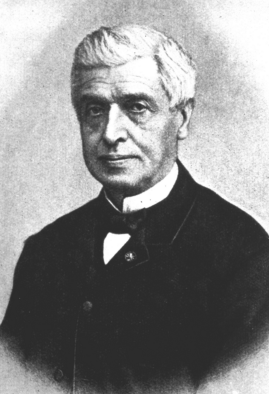
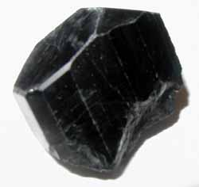

MÉMOIRES PRÉSENTÉS PAR DIVERS SAVANTS A L'ACADÉMIE DES SCIENCES DE L'INSTITUT IMPÉRIAL DE FRANCE MÉMOIRES PRÉSENTÉS PAR DIVERS SAVANTS A L'ACADÉMIE DES SCIENCES DE L'INSTITUT IMPÉRIAL DE FRANCE ET IMPRIMES PAR SON ORDRE
SCIENCES MATHÉMATIQUES ET PHYSIQUES
TOME DIX-SEPTIÈME
revue, le 28 septembre 2002Plan : Introduction - I. Notice historique sur G.-A. Daubrée par M. Berthelot - II. Expériences synthétiques sur le métamorphisme [Introduction - Première partie - historique - Chapitre Ier : Etat de la géologie à l'époque de Hutton - Chapitre II : système de Hutton - chapitre III : successeurs de Hutton - chapitre IV : travaux relatifs aux autres actions du globe : §1 - éruption des volcans - §2 - roches éruptives - §3 - gîtes métallifères - §4 - dislocations mécaniques de l'écorce terrestre - §5 - chaleur interne du globe - Chapitre V : Modifications depuis Hutton - Chapitre VI : Métamorphisme de structure - Chapitre VII : Mention des autres observateurs - Chapitre VIII : Histoire des expériences synthétiques : fusion et refroidissement des roches - cristaux obtenus dans les foyers de fonte - voie sèche [fusion simple - vapeurs] - voie humide - Deuxième partie - Exposé des faits aquis - Chapitre Ier : métamorphisme de juxtaposition - Chapitre II : métamorphisme régional -
PARTIE I - II - III - IV - Notes [1 à 69] sur la partie I
IntroductionGabriel-Auguste Daubrée est l'un des plus grands savants français du XIXe siècle. Les travaux de minéralogie qu'il a effectués, tant au plan théorique de sous l'angle de l'expérimentation et des synthèses cristallines, complètent ceux menés par Henri Sainte Claire Deville et par Jacques-Joseph Ebelmen. D'autres chercheurs sont à citer sous ce rapport, mais G. Daubrée

Gabriel-Auguste Daubrée
(1814-1896)commentent leurs expériences dans son Mémoire sur le Métamorphisme des roches. Outre ses grands travaux de minéralogie, Daubrée s'est intéressé à l'histoire de la chimie et a fait publier un texte sur la génération des métaux et des minéraux, le Bergbüchlein, du plus haut intérêt pour l'étudiant en science hermétique. Les textes que l'on trouvera ici se composent d'une notice biographique sur la vie de M. Daubrée, de son Mémoire, déjà cité, et d'un texte sur les expériences de synthèse cristalline. L'ensemble de ces textes complète les extraits des Comptes Rendus de l'Académie des Sciences que nous avons insérés, en particulier dans les sections sur le Soufre, le Mercure de nature et la réincrudation.
I. NOTICE HISTORIQUE SUR LA VIE ET LES TRAVAUX DE M. DAUBREE MEMBRE DE L'ACADÉMIE [Mémoires de l'Académie, t. XLVIII]PAR M. BERTHELOT SECRETAIRE PERPETUEL DE L'ACADEMIE.
MESSIEURS,
Chaque profession a sa philosophie. En même temps que les hommes poursuivent une carrière pratique, ils réfléchissent sur le système moral et matériel des faits et des idées qui s'y rattachent : réflexions parfois profondes et susceptibles d'aboutir à des conceptions originales, lorsqu'il s'agit de personnes douées d'initiative propre, déjà développées et même mûries par une éducation méthodique. Tel est particulièrement le cas des gens adonnés à des professions scientifiques ; et, pour nous borner au sujet du présent entretien, tel est le cas des ingénieurs des Mines. L'objet pratique de leur profession, leur rôle dans notre civilisation moderne, c'est la direction et la surveillance des travaux souterrains,source pacifique de richesses indéfîmes pour l'espèce humaine : soitpar la découverte des métaux précieux, soit par l'utilisation industrielle ou agricole des matériaux enfouis dans les profondeurs du sol. Préparés dès leur jeunesse et initiés aux principes et aux méthodes de la Mécanique, ils sont obligés d'approfondir la Géologie et la Minéralogie. Sont-ils géologues ? L'observation des actions naturelles et des lois qui les dirigent, les amène aux spéculations les plus élevées sur les origines et l'histoire des révolutions du globe terrestre, sur la formation progressive des montagnes et des mers, sur les effets généraux attribuables à l'influence des eaux et des feux souterrains. Les rêveries mystiques des cosmogonies primitives1 font place ainsi à des vues plus rationnelles et non moins séduisantes. Mais, dans cet ordre, il est encore plus facile d'imaginer que de démontrer; car nous ne connaissons l'histoire des révolutions d'autrefois que par les traces mutilées qu'elles ont laissées; l'observation des phénomènes actuels est toujours limitée et incomplète, et nous ne pouvons contrôler l'une et l'autre que par des expérimentations sur une petite échelle, hors de proportion avec les conditions de temps et d'espace où se sont développées les transformations géologiques du globe terrestre.
La Minéralogie opère dans des conditions plus restreintes, plus minutieuses et souvent plus exactes. En effet on n'est pas réduit ici àla pure analyse; on observe la génération des minéraux de plus prèset plus nettement que celle des roches et des terrains; on peut et l'on sait les reproduire. Aussi, depuis un siècle et davantage, les savantsmodernes ont-ils entrepris de résoudre par la synthèse les problèmes relatifs aux minéraux : problèmes qui touchent en réalité à des notions non moins profondes que ceux de la Cosmogonie. Au lieu d'examiner dans son ensemble l'étendue infinie de l'univers sidéral, nous abordons l'étude plus localisée en apparence, mais en réalité non moins illimitée, du monde des molécules et des atomes, comme l'avaient déjà tenté les philosophes de l'Antiquité2. Les deux ordres de phénomènes ont d'ailleurs entre eux des connexions étroites : ce qui avait conduit nos prédécesseurs, lors de la fondation de l'Institut, à réunir dans une même Section la Géologie et la Minéralogie. Ces deux Sciences ont été illustrées par les plus grands noms scientifiques du XIXe siècle, en France et à l'étranger. Il suffit de rappeler dans cette enceinte les noms de Haüy, Elie de Beaumont3, Cuvier, de Sénarmont4. Je me propose aujourd'hui d'exposer devant vous l'oeuvre de l'un des plus célèbres représentants de ces grandes traditions, de Daubrée, qui fut à la fois minéralogiste et géologue, et n'hésita pas à aborder les hautes conceptions cosmogoniques.
I.
La vie de Daubrée offre la simplicité de celle d'un savant élevé dans l'aisance, et qui poursuit sa carrière laborieuse suivant une direction rectiligne et à ciel ouvert; sans autre incident que les recherches originales et les découvertes, accomplies pendant la marche régulière d'un cursus honorum professionnel. Une semblable régularité même exclut ces efforts excessifs et cette lutte intense pour l'existence, soutenue par les hommes moins favorisés de la fortune, et elle exclut également ces émotions passionnées, qui dévorent la vie exceptionnelle des artistes et des politiciens. Aussi Daubrée a-t-il mené l'existence sereine des gens d'étude et de laboratoire, en conservant cet équilibre et cette santé morale et physique, compagnes ordinaires d'un bon tempérament; et il a prolongé jusqu'à l'âge de quatre-vingt-deux ans une carrière entourée de l'affection des siens et du respect public.
Gabriel-Auguste Daubrée naquit à Metz, le 25 juin 18145. Son père avait pris part à la funeste expédition de Russie ; il n'y survécut pas longtemps et laissa son fils en bas âge aux soins d'une mère dévouée, qui présida à son éducation. Celle-ci eut lieu au collège de Metz et les goûts de l'enfant furent tournés de bonne heure vers les Sciences naturelles. L'influence de son oncle, ancien médecin principal de l'armée d'Espagne, contribuait à l'y diriger. Conformément à une tradition courante dans cette ville patriotique et militaire de Metz, ravie à laFrance il y a un tiers de siècle, ses premières études aboutirent à préparer le jeune homme à l'Ecole Polytechnique, où il entra à l'âge de dix-huit ans avec le numéro 24. Il y rencontra la camaraderie ordinaire et les amitiés des élèves de cette grande école, celle de Paye en particulier. Deux ans après, il en sortit parmi les premiers rangs; ce qui lui permit de choisir la carrière des Mines. Puis il fit ses tournées d'élève-ingénieur : qui le conduisirent d'abord dans la Cornouaille anglaise, où il observa en 1887 les mines d'étain, qu'il devait revoir en Saxe quatre ans après. Ces observations ont fait l'objet d'un premier Mémoire (1841) et elles ont été le point de départ de ses recherches originales sur la formation de la cassitérite naturelle.Daubrée poursuivant ces voyages réglementaires, dont l'usage est si utile pour le développement de la carrière pratique d'ingénieur, alla ensuite en Norvège et en Suède; il y entra en 1842 en relations respectueuses avec Berzélius, dont le nom dominait alors la Science. Les communications internationales personnelles ont toujours joué un rôle capital dans l'évolution intellectuelle de nos savants. La Suède a été un foyer célèbre de découvertes depuis Scheele, Bergmann6 et Berzélius, jusqu'à Nordenskiôld et ses contemporains. Aussi Daubrée put-il rapporter de ses promenades dans le nord de l'Europe à la fois une connaissance profonde des filons métallifères, et des inspirations originales, qui servirent de guides ultérieurs à ses propres études. Son mérite était dès lors si bien reconnu qu'en 1889, à l'âge de25 ans, il fut presque simultanément désigné comme ingénieur desMines en résidence à Strasbourg, reçu docteur es sciences, avec une thèse sur les phénomènes calorifiques du globe terrestre, enfin chargé du cours de Minéralogie et de Chimie à la Faculté des Sciences de Strasbourg.
Les créations des chaires d'Enseignement supérieur étaient plus rares à cette époque que de nos jours, et les hommes capables, doués d'une instruction suffisante pour y professer, étaient peu nombreux,les directions scientifiques moins encombrées, les compétitions moins accumulées qu'aujourd'hui. C'est pourquoi la carrière s'ouvrait plus tôt aux jeunes savants; quoique les facilités de travail fussent assurément moindres et les ressources de tout genre, bourses et laboratoires, plus restreintes. Chaque temps, chaque période a ses commodités et ses entraves corrélatives. Ainsi la vie a toujours été facile à Daubrée. En 1843, il épousa Mlle Trotyanne, issue d'une famille lorraine, fille
d'un ancien maître de forges. Il en eut trois enfants, un fils et deux filles, et ils vécurent ensemble et heureux jusqu'aux limites d'une vieillesse avancée.
Cependant les recherches originales de Daubrée se poursuivaient lentement. Elles débutent dans le Tome XII des Comptes rendus de l'académie des Sciences, en 1841 ; elles s'y multiplient peu à peu, contenues dans 110 volumes de notre collection, soit 55 années. Au Tome CXXII, en 1896, terme de la longue existence de notre confrère, le nombre de ses Communications à l'Académie dépassait 1400. Son enseignement à la Faculté et ses travaux professionnels d'ingénieur l'occupèrent d'abord presque exclusivement. Il publia, en 1849 la carte géologique du Bas-Rhin; en 1852, la description géologique du même département. En 1852, Léopold de Buch, alors le célèbre doyen des géologues européens, se l'adjoignit comme compagnon dans un voyage aux volcans éteints du Vivarais. La même année, Daubrée visita l'Auvergne avec G. Rosé et Mitscherlich, autres grandes illustrations de la Science allemande; l'année suivante, il voyagea en Italie.Il publie, en 1845, ses observations sur les minerais de fer qui se
forment actuellement dans les lacs et les marais, travail honoré par une
médaille d'or de la Société de Harlem. Puis vinrent des recherches sur la distribution de l'or dans le lit et la vallée du Rhin (1846). Les laveurs
en retiraient alors pour 4^000^ par an, en gagnant 1^,50 à a^ par
jour; leur récolte représentait les 8 billionièmes d'or du poids du sable
traité, à raison de dix-sept à vingt paillettes d'or par milligramme. Cet
or provient des couches schisteuses des Alpes. La chaire de Strasbourg mettant à sa disposition des instruments detravail de plus en plus perfectionnés, il entre, en 1849, dans la voie nouvelle qui allait manifester toute son originalité, et compose un Mémoire « Sur la production artificielle de quelques espèces minérales cristallines ». Doyen de la Faculté en 1852, ingénieur en chef en 1855, il profite des travaux de captage accomplis sous sa surveillance, à partir de 1857, aux sources des eaux minérales de Plombières. Il y constate d'abord et étudie la formation d'un grand nombre de minéraux, silicates et autres, engendrés par les actions lentes exercées au cours des siècles entre les eaux thermales et les roches qu'elles traversent, et surtout entre ces eaux et les maçonneries, ciments et autres matériaux des constructions romaines7.Dans cette voie, les problèmes les plus élevés et les plus délicats sont abordés par Daubrée, et il éclaire les résultats que fournit l'analyse, à l'aide de la Minéralogie synthétique. Ses recherches prennent un caractère à la fois plus étendu et plus général. Son Mémoire sur lemétamorphisme, où il expose l'ensemble de ses travaux d'alors, fut couronné par l'Institut en 1860. Sa réputation et son autorité grandissent; il est rappelé à Paris pour y poursuivre sa carrière, dans des conditions à la fois plus favorables et plus éclatantes.En effet, la mort de Cordier, l'un des géologues qui ont marqué au commencement du XIXe siècle, ouvrit en 1861 deux successions : celle de membre de l'Académie des Sciences (Section de Minéralogie et Géologie), où Daubrée fut élu le 20 mai, et celle de professeur de Géologie au Muséum, dont il devait réorganiser et enrichir les collections. On sait quel rôle les collections du Jardin des Plantes ont joué dans l'histoire de la Science française. Daubrée y trouva un champ d'expériences nouveau et illimité, par l'étude des météorites.Le fauteuil auquel Daubrée fut ainsi appelé dans notre enceinte, à l'âge de 47 ans, n'a eu que trois titulaires dans le cours d'un siècle, depuis la fondation de l'Institut; tous trois justement célèbres : Haüy, membre de l'ancienne Académie des Sciences depuis 1783, puis membre de l'Institut de 1795 à 1822; Cordier, de 1822 à 1861; Daubrée, de 1861 à 1896, pendant 36 années. Une nouvelle perte plus douloureuse encore pour la Science française, celle de Sénarmont8, l'une des figures les plus sympathiques de son temps et l'un des initiateurs et maîtres de Daubrée dans les problèmes de la synthèse des minéraux par voie humide, lui ouvrit, en 1862, l'enseignement de la Minéralogie à l'Ecole des Mines; ce qui lui donnait à la fois, par l'une de ces coïncidences heureuses qui n'ont pas manqué à sa carrière, un poste d'activité et son entrée à l'École des Mines. Il fut nommé ensuite inspecteur général des Mines en 1872, puis directeur de l'Ecole, en remplacement de Combes, et promu grand officier de la Légion d'honneur en 1881. Ainsi Daubrée s'était élevé d'un pas égal et parallèle dans la double hiérarchie administrative et scientifique. Elu pendant la même période correspondant des Académies et Sociétés étrangères les plus célèbres, il avait atteint les degrés les plus hauts des récompenses auxquelles puisse prétendre un savant : je veux dire les honneurs accordés par ses pairs. Il prit sa retraite dans le service des Mines en 1884 et n'en continua pas moins à travailler jusqu'au jour du départ suprême, le 29 mai 1896 ; ayant rempli avec fidélité et conscience toutes les charges qui lui avaient été confiées et laissant le souvenir d'un grand savant et d'un homme de bien.
Je n'ai pas connu Daubrée dans sa jeunesse, quoique nous ayons commencé à être en relation au temps de son séjour à Strasbourg; d'où il m'écrivit pour signaler les analogies entre ses recherches synthétiques d'ordre minéral et mes travaux de synthèse en Chimie organique. Depuis son séjour à Paris, nos relations étaient devenues plus fréquentes. Les contacts entre savants étaient nombreux à cette époque, plus peut-être qu'aujourd'hui. Autour de la personne respectée de Sénarmont, à l'Ecole des Mines, quelques élèves et collègues se retrouvaient, venant lui soumettre leurs idées, avec la confiance que méritaient la rectitude de son esprit et la droiture de son caractère. Plus tard, au laboratoire de Henri Sainte-Claire Deville, à l'École Normale, on se réunissait sur un pied de camaraderie, plus nombreux, plus affairés, mais non moins dévoués aux intérêts communs de la Science et à la poursuite des problèmes les plus élevés. Daubrée y apparaissait souvent.
C'était un homme de taille supérieure à la moyenne, et relevée par la nuance un peu officielle de sa posture. Sa figure aimable, réfléchie, distinguée, avait parfois quelque chose d'indécis et de flottant dans son expression. Doué d'une bienveillance naturelle et d'une grande aménité de relations, il était en rapports suivis avec de nombreux savants étrangers qu'il se plaisait à patronner parmi nous. Le minéralogiste russe Kokscharow et l'illustre explorateur Nordenskiôld comptèrent parmi ses amis, et il honora aussi de son amitié l'aimable dom Pedro, empereur du Brésil. Mais si Daubrée était serviable, il avait horreur de toute lutte, incapable de se livrer même à ces médisances inoffensives, dont les meilleurs des hommes ne savent pas toujours s'abstenir. Il conserva jusqu'aux limites d'une vieillesse avancée l'humeur égale et l'activité tranquille de ses jeunes années.
« Tout m'a réussi, écrivait-il en 1895, une année avant sa mort, dans ma famille, dans mes affections et amitiés, dans ma carrière d'ingénieur et dans ma carrière scientifique; rare bonheur dont j'ai joui jusqu'au jour où j'ai été subitement privé de ma bien aimée et dévouée compagne ».
Cette existence douce et privilégiée, autant que le comporte la destinée humaine, fut couronnée par de brillantes découvertes, fruits naturels de sa vive curiosité, de son ardeur soutenue dans le travail, de la justesse de son jugement, jointe à la force intellectuelle qui le conduisit à attaquer les questions les plus hautes, à orienter ses recherches autour d'un point central, dans une direction bien définie, et à pousser ses déductions jusqu'aux généralisations les plus hardies. Ce sont ces recherches, ces découvertes dont nous allons maintenant nous occuper.
II.
La formation des minéraux, des roches et terrains qui entrent dans la constitution de la masse terrestre a préoccupé les esprits réfléchis, dès les périodes les plus anciennes de l'histoire.Les philosophes grecs ont imaginé pour en rendre compte différentes hypothèses rationnelles, en particulier celle des quatre éléments : terre, eau, air et feu9. C'étaient leurs transformations réciproques qui engendraient les corps sous leurs états multiples : solide, liquide, aérien et igné. Ainsi se produisent, en particulier, les espèces métalliques, pierreuses, salines, d'après le Timée de Platon. Aristote,dans les Météorologiques, développe des idées plus précises, empruntées à une observation positive et qui font déjà pressentir nos théories modernes. Il suppose que les métaux et les minéraux sont engendrés dans la terre par deux exhalaisons; d'une part l'exhalaison fuligineuse, sèche et brûlante, qui produit les pierres infusibles, l'ocre, la rubrique, les sulfures, etc.; d'autre part, l'exhalaison vaporeuse,humide, qui produit les métaux fusibles et ductiles10. Plus tard, ces notions se compliquèrent d'imaginations astrologiques et mystiques, d'après lesquelles la génération des minéraux, et spécialement celle des métaux, serait soumise à l'influence du Soleil, de la Lune et des différentes planètes11. Ces idées se retrouvent chez les alchimistes, jointes à la notion des esprits ou corps volatils, opposés aux corps fixes, terres et métaux, qu'ils modifient peu à peu, en les imprégnant lentement dans la nature, et dont l'art peut imiter les effets en untemps plus raccourci dans les laboratoires.
Ces systèmes vagues et mêlés de chimères méritent cependant d'être
rappelés; car on y retrouve à la fois une perception confuse des phénomènes naturels, étudiés aujourd'hui par nos Sciences positives, telles que la Géologie, la Minéralogie, la Chimie, et l'indication des premières tentatives faites pour les expliquer et pour les reproduire artificiellement. Dès les débuts de la Science moderne, les physiciens s'efforcèrent d'y substituer des conceptions plus conformes à l'expérience. C'est ainsi que l'on voit apparaître au XVIIe et au XVIIIe siècle les deux grandes écoles des Plutoniens12, qui font tout dériver des actions du feu, en Géologie, et des Neptuniens13, qui rapportent tout aux actions de l'eau. Déjà la vue des phénomènes volcaniques avait conduit les philosophes naturalistes du Moyen Âge à l'hypothèse du feu central. Descartes envisageait la Terre comme un astre refroidi, à l'intérieur métallique, enveloppé d'une croûte pierreuse, produite par des exhalaisons qui amènent vers la surface les infiltrations de la masse centrale. Newton part de l'hypothèse de la fluidité initiale du globe pour en calculer l'aplatissement. Buffon approfondit ces vues cosmologiques. Mais il serait trop long de développer ici tout cet historique. Il suffira de rappeler que c'est surtout au XIXe siècle que la constitution définitive de la Chimie et les progrès prodigieux de la Physique ont conduit les minéralogistes à multiplier leurs observations et leurs expériences suivant deux directions principales, la voie ignée et la voie humide14.A la voie ignée se rattachent, en 1792, les expériences de Spallanzani : également célèbre en Physiologie, où il combat la génération spontanée, et en Géologie, où il opère la fusion des laves. Citons encore les tentatives de sir James Hall, vers 1805, pour reproduire le marbre en faisant cristalliser le carbonate de chaux sous pression; les vues de Davy sur les métaux alcalins, supposés préexistants dans la masse métallique centrale, et celles d'Elie de Beaumont sur la coupellation métallique. Bientôt viennent des études plus précises sur les produits volatils ou scorifiés des hauts fourneaux et des creusets brasqués. On y observe la production de nombreux minéraux naturels, tels que le péridot, le pyroxène, le feldspath15. Rappelons seulement les noms de Mitscherlich, de Berthier, de G. Rosé, etc., dans cette voie, où ont marqué un grand nombre de savants en France, en Angleterre, en Allemagne, pendant la première moitié du XIXe siècle.
Les phénomènes attribuables à la voie humide ont été l'objet d'études et d'observations non moins multipliées et non moins importantes, que résume le mot de métamorphisme, appliqué aux transformations naturelles de certaines roches, telles que les roches calcaires, changées partiellement en dolomie par l'intervention des composés magnésiens. Il y a là un vaste ensemble de travaux et de recherches, qui s'éclairent et se complètent les uns les autres, au double point de vue de la constatation des faits particuliers et de la constitution des méthodes.
Nous arrivons ainsi aux savants qui ont été les précurseurs de Daubrée, de H. Sainte-Claire Deville16 et de leurs contemporains. Pour ne parler ici que des Français, il suffira de citer Ebelmen17, qui opérait par voie sèche, en employant des dissolvants fusibles à haute température, tels que l'acide borique. Il a fabriqué ainsi le péridot, le corindon, les spinelles à base de fer, de zinc, de magnésie, diverses gemmes naturelles et bien d'autres composés18. D'autre part, la voie humide, c'est-à-dire l'action de l'eau maintenue liquide entre 100° et 300°, avec le concours de la pression, fut mise en œuvre avec un succès non moindre par de Sénarmont et il reproduisit une multitude de substances des filons, tels que le quartz cristallisé, le fer spathique, le carbonate de manganèse, le sulfate de baryte, divers sulfures simples et complexes de fer, de cuivre, d'antimoine19.Je viens de résumer brièvement l'état général de la Science dansl'étude des problèmes minéralogiques, à l'époque où Daubrée entra dans la carrière scientifique. Comment a-t-il été conduit à traiter ces ordres de problèmes? A quel point de vue s'est-il placé? Quelles découvertes spéciales, quelles idées et théories générales y a-t-il apportées ? C'est ce qu'il convient d'examiner.
Observons d'abord, pour mettre les choses au point, qu'aujourd'hui, dans tout ordre d'études, les questions sont poursuivies simultanément dans les différents pays et par un grand nombre de savants exercés; leurs recherches s'entrelacent, se soutiennent, se complètent les unes les autres, et il est difficile, souvent même impossible, de faire à chacun une part distincte et équitable, quelque bonne volonté que l'on y mette. C'est pourquoi je dois me limiter à parler surtout des travaux de Daubrée. C'est son œuvre personnelle que je vais essayer de retracer, en me limitant aux questions principales ; car la variété de ses recherches est considérable et elles ont porté sur une multitude de problèmes, les uns généraux, les autres particuliers ; ils embrassent à la fois l'examen des produits naturels, et celui des conditions géologiques de leur formation et de leur reproduction par l'art du chimiste et de l'industriel. Ainsi entendue, l'histoire de la Science touche à l'histoire même de la civilisation humaine. A l'origine, les recherches professionnelles de Daubrée ont été le point de départ de ses travaux théoriques : je l'ai dit plus haut, en retraçant sa biographie; mais il convient d'y revenir, pour en mieux comprendre l'enchaînement méthodique.
Tout d'abord ses études sur les gîtes de l'étain l'ont amené à en reproduire les minerais, par l'emploi de la voie sèche et des agents minéralisateurs volatils. Ses voyages en Suède20 sont devenus le point de départ d'un Mémoire sur la formation des minerais de fer, dans les eaux, lacs et marais; ses travaux sur le captage des sources thermales l'ont conduit à étudier, et au besoin à imiter, les réactions des eaux souterraines, ainsi que la formation, soit actuelle, soit au cours des périodes historiques et même géologiques, des minéraux contenus dans les filons métalliques.
En abordant les phénomènes plus généraux du métamorphisme et les conditions de pénétration de l'eau dans les roches profondes, dirigé par un ensemble méthodique de déductions rationnelles, il a exécuté ses principaux travaux minéralogiques synthétiques, par voie sèche et par voie humide, suites et conséquences de cet ordre d'observations. Sa nomination comme professeur au Muséum d'Histoire naturelle lui fit entreprendre l'étude systématique des météorites, l'une des séries les plus importantes dans son œuvre scientifique21. Non seulement il en a établi la classification méthodique et tracé les règles de leur nomenclature; mais les déductions tirées de leur examen chimique et
mécanique lui ont suggéré les expériences les plus intéressantes sur la
formation même des couches superposées des terrains géologiques et la stratification des couches profondes; expériences résumées dans sa
théorie du péridot, envisagé comme la scorie universelle22. Enfin il aborda quelques-uns des problèmes relatifs à la constitution des corps
extra-terrestres et à leur origine. Ainsi, dans les différentes régions de la Science, on retrouve de tous côtés la preuve de la curiosité universelle de Daubrée, de son ardeur enthousiaste et de la hauteur de ses vues scientifiques. Il convient de développer le programme qui vient d'être tracé, comme embrassant l'ensemble de l'œuvre de Daubrée.III.
Commençons par les travaux relatifs aux actions plutoniennes : je veux dire accomplies sous l'influence des hautes températures, et plus spécialement par voie sèche : ce qui n'exclut pas d'ailleurs les réactions de l'eau sous forme de vapeur. Les premières recherches de Daubrée furent inspirées par l'examen des minerais d'étain en Cornouailles (1837) et en Saxe (1841). Il observa que l'oxyde d'étain naturel (cassitérite) et les minerais d'étain, d'une façon plus générale, sont accompagnés par des composés fluorés. De là l'idée de reproduire artificiellement ces minerais d'étain, en faisant agir un composé volatil de l'étain sur la vapeur d'eau. Seulement, au lieu du fluorure, corps d'un maniement délicat, Daubrée opérait avec le chlorure stannique. Il réussit parfaitement23. Ce fut sa première synthèse minéralogique,exposée dans un Mémoire publié en 1849. La réaction s'opère nettement, même à une température inférieure à 300°, et elle fournit un oxyde cristallisé, qui reproduit les caractères principaux du minéral naturel. Ce n'est pas tout : les minerais de titane accompagnent fréquemment ceux d'étain et ils sont associés d'une façon pareille aux composés fluorés. Aussi Daubrée étend-il aussitôt ses expériences à la reproduction de l'acide titanique cristallisé, anatase, rutile, brookite, sous les formes multiples qu'il affecte dans les filons métallifères.Il l'obtient donc par l'action du chlorure de titane sur la vapeur d'eau.
Ces résultats, aussi bien que les détails de disposition des produits, rappellent à certains égards les dépôts des fumerolles volcaniques et l'apparition de certaines substances non volatiles. En effet, dans les conditions de ce genre d'expériences, les composés réputés fixes offrent l'apparence énigmatique de sublimés; ce qui s'explique parce que la réaction qui les engendre a été développée au contact de deux vapeurs, dans la région même où elles sont entrées en conflit24. C'est ainsi que Gay-Lussac, précurseur de Daubrée, avait, dans une expérience ancienne, obtenu le fer oligiste, en décomposant le perchlorure de fer par la vapeur d'eau. Poursuivant et élargissant ses recherches, Daubrée réalise, en 1851, la synthèse d'un minéral plus compliqué, l'apatite cristallisée, combinaison de phosphate et de chlorure qui existe dans la nature. Il l'a fabriquée en faisant agir le perchlorure de phosphore, non plus sur un corps volatil, tel que l'eau employée dans les essais précédents, mais sur la chaux vive. Généralisant de plus en plus la méthode, en opérant avec le concours du chlorure et du fluorure de silicium, il crut pouvoir annoncer, en 1854, la reproduction des silicates de chaux (wollastonite), de magnésie (péridot), de chaux et magnésie (pyroxène) et même de composés plus complexes, comparables à la topaze et aux feldspaths.
Depuis, cette méthode a trouvé, sous une forme et dans un sens non moins original, des applications du plus haut intérêt dans les recherches de H. Sainte-Claire Deville et de Hautefeuille, qui ont montré comment de petites quantités d'un corps volatil, tel que le gaz chlorhydrique, peuvent transformer et faire cristalliser, par des actions méthodiques et réitérées, de grandes masses d'oxyde de fer, d'étain, de titane : l'oxyde de fer, par exemple, se changerait tout d'abord en un chlorure volatil, qui par une action inverse régénère à mesure l'oxyde primitif sous forme cristalline. La théorie des agents minéralisateurs a pris ainsi une importance et un développement extrêmes25 ; comme il arrive souvent dans la Science lors du concours de plusieurs savants, combinant d'une façon indépendante et mettant en quelque sorte bout à bout les résultats obtenus séparément par chacun d'eux.
Un tel ordre d'expériences offre en outre cet intérêt de rendre compte de certains phénomènes de métamorphisme, c'est-à-dire de transformations chimiques de roches et de terrains géologiques au contact de divers agents. Mais ce sont là des phénomènes d'un caractère plus général et que nous allons retrouver tout à l'heure. La curiosité de notre futur confrère, partout en éveil, porta son attention jusqu'à étudier des découvertes singulières, faites dans diverses régions de la France. Il s'agit des forts vitrifiés, c'est-à-dire construits en déterminant la fusion des matériaux peu cohérents, assemblés d'abord régulièrement, puis cimentés par l'incendie de bois accumulés. C'est un genre particulier de fortifications barbares, mises en œuvre aux temps de la chute de l'empire romain. Signalons encore en passant ses études sur le platine natif ferrugineux magnétipolaire de l'Oural26, dont il a reproduit les propriétés en fondant ensemble le fer et le platine en proportions convenables, avec le concours d'une orientation magnétique; n'oublions pas ses essais pour imiter l'anthracite, en chauffant le bois en vase clos vers 300°.IV.
La formation des minéraux par voie neptunienne, je veux dire avec le concours des réactions de l'eau liquide, soit à la température ordinaire, soit à une température plus élevée, joue un rôle important parmi les phénomènes naturels : Daubrée a étendu ses recherches à cet ordre de réactions synthétiques et il occupe l'un des premiers rangs parmi les savants qui ont entrepris ce genre d'expériences. Elles touchent d'ailleurs en plus d'un point aux études plutoniennes. Entre l'action de l'eau liquide à haute température et l'action de la vapeurd'eau sous des pressions élevées, il n'existe pas de ligne de démarcation bien tranchée. Dès ses débuts, en 1845, le voyage de Daubrée aux pays Scandinaves fixa son attention sur les minerais de fer qui se forment encore actuellement dans les laps et les marais et jusqu'au sein des prairies, sous l'influence des sources et des infiltrations ferrugineuses. On les retrouve dans tous les pays du monde. Ce sont des oxydes de fer hydratés et amorphes, dont l'exploitation industrielle est facile, pourvu qu'ils se présentent en masses suffisantes. Ils proviennent de l'oxydation et de la désagrégation de minéraux plus profonds, tels que les pyrites notamment, altération accomplie avec le concours simultané de l'oxygène, d'un peu d'acide carbonique et d'acide crénique, dissous dans les eaux souterraines. N'oublions pas d'autre part l'action réductrice propre des débris végétaux et des organismes microscopiques, déjà signalés par Ehrenberg. Les oxydes de fer ainsi redissous sont ensuite suroxydés et précipités, lorsque les eaux souterraines arrivent au contact de l'atmosphère. Ces minerais se manifestent sous la forme de grains sphéroïdes (pisolithes) et de couches concentriques, renfermant souvent une certaine dose d'oxyde de manganèse. Les mécanismes multiples et curieux qui président aux transformations naturelles du fer et de ses composés et les amènent aux états exploitables par l'industrie, jouent un rôle important dans la métallurgie et, par contre-coup, dans l'économie sociale. Ils ont fait l'objet des recherches de plus d'un minéralogiste. Daubrée, en particulier, les a étudiés et analysés avec beaucoup de finesse. Mais ses études les plus originales sont celles auxquelles il a été conduit par ses travaux professionnels sur le captage des sources de Plombières et de diverses autres eaux minérales, déjà connues et exploitées du temps des Romains. En effet, dans les fouilles modernes on a retrouvé les constructions antiques, et l'ingénieur a pu observer les transformations chimiques profondes des bétons et autres maçonneries, attaqués sous l'influence des siècles, par ces eaux, amenées souvent des profondeurs à une température plus ou moins élevée. Il s'y est engendré peu à peu toute une série de minéraux, dérivés à la fois des éléments propres de la construction, briques et poteries, et des éléments étrangers dissous dans les eaux minérales. On trouve ainsi réalisées sur une grande échelle des expériences de longue durée, dont on observe les produits et dont il reste seulement à établir par l'analyse les conditions d'exécution. Puis on s'efforce de les reproduire dans les essais de laboratoire, plus faciles à définir d'une façon rigoureuse, mais plus restreints au point de vue du temps et des masses intervenantes. Daubrée constata d'abord la formation de certains silicates hydratés et zéolites, telles que chabasie, hyalite et opale mamelonnée, mésotype, analcime, apophyllite ; tous corps offrant des caractères pareils à ceux des mêmes minéraux constatés dans les basaltes, traversés par les infiltrations aqueuses. De même le quartz cristallisé, la wollastonite (silicate de chaux), le pyroxène, etc. La plupart de ces composés peuvent d'ailleurs être reproduits en attaquant le verre par l'eau sous pression, à des températures de 200° à 300°, et même inférieures27.
Il généralisa ces observations et reconnut que divers minerais métalliques apparaissent également dans certaines eaux, telles que les sources de Bourbonne-les-Bains, de Bourbon-l'Archambault, d'Olmeto en Corse, etc. ; ces minéraux étant formés tantôt par la réaction des sels des métaux contenus à l'état de traces dans les eaux minérales, tantôt par l'action de ces eaux sur les médailles et objets métalliques, déposés jadis à titre d'ex-voto. Citons notamment le cuivre gris, les pyrites, la chalcopyrite, la panabase, la galène, le sulfate de strontiane, le fer carbonaté, etc.
Ces études l'amenèrent à d'autres rapprochements. En effet, dans certaines fouilles on a retrouvé les conduites artificielles et les trajets naturels, par lesquels passaient autrefois des sources minérales aujourd'hui éteintes, ou ayant pris d'autres directions. On constate alors des effets non seulement séculaires, mais susceptibles de remonter aux époques géologiques. On peut d'ailleurs expliquer ainsi la localisation de certains minerais métalliques, les amas ferrugineux des Vosges notamment, observables le long des failles qui mettent en contact le grès des Vosges et le Muschelkalk. C'est par des réactions du même ordre que l'on interprète la présence de certains minéraux disséminés dans les roches, sédimentaires et fossilifères, même inaltérées : condition qui exclut l'hypothèse d'une cristallisation résultant de quelque fusion ignée. Tels sont notamment : le quartz cristallisé, contenu dans des géodes de silex, les rognons de pyrites de fer, observables dans la craie et que l'on constate si aisément dans les éboulis des falaises du Havre et des côtes de la Manche. Certaines anomalies de minéraux naturels, par exemple ceux résultant de l'action de l'eau sur le basalte, rentrent dans la même interprétation. Ainsi s'ouvre un domaine immense à l'étude des formations naturelles et à la Science qui s'efforce de les imiter. La genèse des gîtes métallifères et des minéraux de filons tire une lumière singulière de cette introduction des réactions, opérées par l'eau surchauffée, invoquée à côté des réactions accomplies à hautes températures entre des matières solides ou fondues, et certaines vapeurs. La transition s'opère dans l'étude des émanations métallifères qui ont concouru à remplir les filons, et dans celle de la vapeur d'eau et du rôle qu'a pu jouer une petite quantité de cette substance, servant d'intermédiaire pour des suites méthodiques de transformations réciproques.
Là interviennent encore des considérations plus délicates, que Daubrée appuie par des expériences intéressantes. Il s'agit de l'eau dite de carrière et de l'infiltration des eaux produite sous l'influence des pressions énormes qui se développent dans les profondeurs du sol. C'est ce qu'il a établi notamment par ses expériences de 1861, relatives aux infiltrations capillaires de l'eau à travers une paroi poreuse, malgré une pression extérieure considérable. La considération de semblables pressions, opposée à la contre-résistance des espaces capillaires remplis alternativement de gaz et de liquides, explique comment l'eau peut passer d'une région soumise à la pression atmosphérique à des régions où les pressions internes sont beaucoup plus considérables. Ajoutons, pour compléter cette interprétation, l'intensité des effets chimiques, et électrochimiques développés par les " affinités dites capillaires, si bien mises en évidence par Becquerel dès 1823. " Dans ce qui précède, nous avons relaté les métamorphoses au contact de divers agents, tels que les composés volatils d'abord et, d'une façon plus générale, l'eau sous ses formes fondamentales, liquide et gazeuse. Nous avons envisagé surtout les productions de minéraux déterminés, et susceptibles d'être formés synthétiquement dans les laboratoires; ce qui constitue l'originalité principale des travaux de Daubrée. Or ces productions, d'ordre essentiellement minéralogique, l'ontamené à traiter des problèmes plus étendus, d'ordre géologique; concernant les transformations d'ensemble des filons, des roches et des terrains, c'est-à-dire les phénomènes compris sous le nom de métamorphisme; métamorphisme réciproque des roches éruptives, venues des régions profondes; métamorphisme des roches stratifiées, qui sont les sédiments des anciennes mers, eaux stagnantes et cours d'eau de toute nature. Ces roches ont été modifiées de façons multiples. Cependant la question du métamorphisme prise dans son ensemble serait trop vaste, et elle a été l'objet des recherches d'un trop grand nombre de travailleurs pour être traitée ici. Je me bornerai à rappeler brièvement dans l'ordre plutonien les belles expériences d'Ebelmen et celles de Daubrée sur la production des minerais d'étain, de l'apatite et d'un grand nombre de silicates naturels. Mais l'influence neptunienne a été plus considérable, et c'est l'action de l'eau, soit à l'état de vapeur à une haute température et avec le concours de pressions considérables, soit à l'état liquide, et au voisinage de la température ordinaire, qui a produit au cours des dernières périodes géologiques les phénomènes les plus remarquables. Il convient de signaler les études et observations de Daubrée, relatives au métamorphisme contemporain développé par les eaux thermales, que j'ai présentées tout à l'heure.
Il a étendu ces déductions généralisées aux roches éruptives et sédimentaires, avec de grands détails. La formation si vaste des terrains dolomifiques, attribuable au contact des sels magnésiens, d'origine marine, avec les roches calcaires, montre toute la portée de ces interprétations faites par les géologues et justifiées par les expériences exécutées sur, une échelle plus réduite dans le laboratoire. Daubrée a réuni l'ensemble des faits connus relatifs aux réactions des eaux souterraines et au métamorphisme neptunien, tant aux époques anciennes qu'à l'époque actuelle, dans un grand Ouvrage en trois Volumes, publié en 1887.Nous arrivons à un autre groupe d'études et d'expériences d'une originalité incontestable : je veux dire les recherches de Daubrée sur la reproduction d'un certain nombre d'effets mécaniques, les uns spéciaux, les autres d'un caractère général, effets observés dans la stratification de l'écorce terrestre. Il convient de les résumer ici, brièvement d'ailleurs, malgré leur importance. Si elles touchent à quelques-uns des problèmes essentiels de la Géologie, elles ne les abordent qu'à des points de vue particuliers. Dans l'ordre graduel de leur rôle naturel, il convient de parler d'abord de là formation des limons, sables et galets, par la réaction purement mécanique de fragments des roches, et des conséquences chimiques, entraînées par la pulvérisation des matières et l'accroissement des surfaces de contact entre les roches, les eaux naturelles et les gaz et vapeurs de l'atmosphère. On se rend compte ainsi de la formation des argiles, aux dépens des roches feldspathiques et silicatées. D'autre part, l'étude du striage et du polissage des roches sous l'influence des mouvements des glaciers explique une multitude d'effets, observés sur les produits erratiques. Ces divers phénomènes ont été aperçus et étudiés par beaucoup d'autres savants, Tyndall notamment, dont on connaît les travaux sur les glaciers et sur la plasticité de la glace.
La direction expérimentale et synthétique de l'œuvre de Daubrée se retrouve avec un caractère plus net dans les études qu'il a publiées depuis 1878 sur les conditions dans lesquelles ont dû s'accomplir les déformations et dislocations des couches constitutives de l'écorce terrestre et, particulièrement, sur leur schistosité. En effet, l'énormité des masses en mouvement dans les phénomènes de glissement, de bouleversement, de renversement, bref, de déplacement réciproquedes couches géologiques a développé des pressions purement mécaniques, d'une intensité extraordinaire et susceptibles d'imprimer aux couches solides des mouvements et des dispositions comparables jusqu'à un certain point à ceux que l'Hydrodynamique constate dans l'étude des liquides. Telles sont les fractures de l'écorce terrestre et les tensions intérieures, manifestées par le développement des failles, des teints, des plicatures; non seulement à l'état de phénomènes isolés, mais constituant certains systèmes réguliers de fêlures, groupées parfois suivant deux directions conjuguées, orthogonales ou obliquanglés. Déjà sir James Hall avait cherché à reproduire, au moyen d'étoffes et d'argiles pliées et comprimées, les contournements que l'on observe dans les terrains stratifiés ; Sorby et Tyndall avaient également travaillé dans le même sens. Mais Daubrée a surtout approfondi ce genre d'études. Après avoir établi une classification des fractures, en créant suivant ses habitudes une nomenclature spéciale des lithoclases, paraclases, diaclases, etc., il a tiré parti d'une machine imaginée par Tresca pour étudier, avec le concours de la presse hydraulique, les effets de compressions localisées et principalement les phénomènes désignés
par ce savant sous le nom d'écoulement des solides. Daubrée s'en est servi pour reproduire la structure schisteuse, susceptible d'être développée dans les corps plastiques, et ses particularités. En opérant sur l'argile, on détermine ainsi un feuilleté, qui dépend de la direction d'écoulement et de la disposition de l'orifice de sortie, ménagé à la matière comprimée ; celle-ci se distribue en feuillets parallèles ou perpendiculaires à la direction susdite. Daubrée poursuit et épuise, avec une singulière sagacité, les conséquences des faits observés et leur application aux effets naturels grandioses, constatés sur les couches géologiques. Des corps rigides sont-ils mêlés aux matières argileuses mises en expérience ? Ils se brisent en fragments dispersés parmi les feuillets, à l'image des fossiles élongés et déformés, caractéristiques de certaines couches terrestres. Les petites parcelles fragiles, telles que celles du mica, se distribuent, au cours de ces essais, de la même façon que dans les schistes micacés et les grès psammites. On voit également dans les expériences, comme dans la nature, certaines déformations se résoudre en ondulations, en plis plus ou moins compliqués; que l'on peut suivre et discerner par l'interposition préalable de lames métalliques minces et flexibles. On retrouve ainsi tous les genres de plissements observés dans les Alpes et une multitude de phénomènes reconnus aujourd'hui dans la tectonique des montagnes. Entrons dans quelques détails, afin de montrer toute l'ingéniosité développée par Daubrée dans l'exécution de ses essais synthétiques. Daubrée imagina en effet des appareils spéciaux, tels que des châssisen fer, de forme rectangulaire, sur lesquels il disposait des couches de matières variées, destinées à subir des pressions horizontales ou autres, analogues à celles qui sont exercées dans la nature avec tant de puissance sous l'influence des masses constitutives des roches et des terrains. Ce n'est pas tout : diverses combinaisons de plaques, de tiges perpendiculaires ou parallèles sont employées par lui pour exercer despressions sur les couches. On peut au besoin opérer suivant deux directions rectangulaires, dans le plan même des couches. Celles-ci mêmes, dans ces expériences, étaient constituées par différents métaux, tels que zinc, plomb, laminés sous différentes épaisseurs. Quelques couches étaient formées de cire cassante, de cire à modeler, seule ou mélangée avec du plâtre, de la résine, de la térébenthine, de façon à en faire varier la consistance et la plasticité. Enfin les couches mêmes étaient disposées en tables, en feuillets plus ou moins épais, parfois d'épaisseur variable, afin d'imiter le sens des lignes synclinales et anticlinales des géologues.Les pressions étaient réparties tantôt régulièrement, tantôt inégalement, de façon à produire des effets transversaux et dissymétriques, des contournements, des plissements, poussés jusqu'au surplomb et au renversement des couches, effets comparables aux dispositions de certains gisements houillers. On retrouve dans ces observations le clivage des roches stratifiées, la structure en éventail; les grands accidents de la surface du sol et du relief, et toute la variété des failles, joints, fissures, observés parmi les couches de l'étage tertiaire dans les Alpes : molasse, couches nummulitiques ou éocènes, couches crétacées, etc. Daubrée va jusqu'à faire apparaître les réseaux réguliers de cassures par l'intervention des mouvements ondulatoires; à imiter l'ensemble de certaines fractures constitutives d'un champ de filons, par la torsion d'une lame de verre épais, ainsi que la génération de surfaces polies et striées par simple écrasement, et même, dans certains cas plus éloignés de la réalité, à étudier l'action d'une enveloppe adhérente sur un sphéroïde contractile. Une grande lumière relative aux effets mécaniques de toute nature exercés sur la disposition des roches dans les terrains a été jetée par cet ensemble de travaux.
VI.
La nomination de Daubrée à la chaire du Muséum (1861) ouvrit devant lui de nouveaux horizons en l'obligeant à étudier les météorites.Il en tira des inductions ingénieuses, d'après lesquelles les problèmes géologiques relatifs à la formation des produits terrestres deviendraient des problèmes cosmologiques, c'est-à-dire relatifs à des produits formés en dehors du globe terrestre et dans les espaces interplanétaires. Son point de départ dans cet ordre d'études fut la possession et la mise en ordre de la Collection des météorites du Muséum : collection déjà considérable, lorsqu'elle fut confiée à Daubrée, chaque jour enrichie depuis par de nouveaux dons et acquisitions, et qui prit un développement plus vaste par suite de l'attention plus vive appelée par Daubrée sur ces études que l'on avait regardées jusque-là plutôt comme un objet de curiosité, que comme présentant un intérêt général pour la Géologie terrestre. Les matériaux réunis à la suite de ses efforts comprenaient en 1879 les produits de 283 chutes d'aérolithes.
L'étude des météorites n'a cessé d'être l'objet des préoccupationsde Daubrée qui fit appel aux observateurs du monde entier, à la fois pour développer et classer sa collection, et pour examiner et déterminer les caractères actuels des aérolithes, leurs circonstances d'origine, leur configuration et leur structure. Il a poursuivi sans relâche ses recherches expérimentales et ses méditations sur leur origine et leur mode de formation, sur les phénomènes aperçus au moment de leur passage à travers l'atmosphère terrestre et de leur chute, et il a entrepris toute une suite d'expériences synthétiques, dans le but de reproduire les phénomènes ayant présidé à la pénétration des météorites dans notre atmosphère et à leur formation extra-terrestre : c'est cet ordre de résultats qu'il a désigné par le nom un peu ambitieux de Géologie sidérale. La classification des aérolithes a été systématisée par Daubrée, surtout depuis 1867. Une considération fondamentale la domine, leur composition chimique et surtout l'existence ou l'absence du fer. Il comprend donc un premier groupe : les sidérolithes ou sidérites, riches en fer, presque toujours associé avec une certaine dose de nickel, et les asidérites, exempts de fer. Le premier de ces groupes est à son tour divisé en holosidères, entièrement métalliques, polysidères, météorites complexes, riches en fer, et oligosidères, pauvres en fer. Daubrée distingue encore les sporadosidères, où le fer est disséminé parmi d'autres substances et les cryptosidères, où il s'y trouve en parcelles microscopiques. Parmi les asidérites, il met à part les météorites pierreuses, contenant certains silicates que l'observation constate également dans les sidérites. La météorite d'Orgueil et ses analogues renferment des substances moins stables, qui ne résistent pas aux températures rouges et même à des températures plus basses : tels un carbonate double de magnésie et de fer, et certains composés hydrocarbonés, de constitution analogue aux principes organiques. En effet, ces derniers sont capables, comme je l'ai vérifié par mes propres expériences, d'engendrer des carbures d'hydrogène sous l'influence de réactions réductrices, à la façon des composés originaires des êtres vivants.
Pendant la dernière partie de sa carrière scientifique, Daubrée a approfondi l'examen des météorites, tant au point de vue des circonstances qui ont accompagné leur passage à travers notre atmosphère qu'à celui de la comparaison de leur composition avec celle des roches et minéraux constitutifs de l'écorce terrestre : travail considérable auquel il a imprimé son cachet, tant par le rapprochement des faits que par la multitude d'expériences mécaniques, chimiques et autres, réalisées et accumulées.Sans doute la Science, sur ce point comme sur la plupart des autres,résulte de l'ensemble des efforts de plusieurs travailleurs; mais il est juste d'attribuer le mérite principal à celui qui les a réunis en un tout,sans prétendre d'ailleurs en méconnaître la filiation. Rappelons d'abord les observations relatives aux altérations superficielles subies par les météorites durant leur passage à travers l'atmosphère, altérations attribuables à la fois à la haute température développée et aux pertes de force vive qui se produisent au moment où les projectiles célestes, animés de vitesses cométaires, pénètrent dans notre atmosphère et compriment l'air, en l'entraînant dans un mouvement tourbillonnant. Par suite, leur surface éprouve un ramollissement et une fusion partielle, accompagnée d'oxydation, et il s'y développe des rides, des cupules et alvéoles et des stries, semblables à celles que pourrait produire un burin. Daubrée imita ces phénomènes, en faisant détoner en verre clos, ou même à l'air libre, les matières explosives les plus puissantes, poudres et dynamites, mises au contact du fer. Dans ces conditions, les gaz comprimés et animés de vitesses excessives reproduisent les mêmes effets de stries, de cisellement, de déformations circulaires, observés sur les météorites. L'étude de la composition chimique des météorites a suggéré à Daubrée des expériences synthétiques et des comparaisons du plus haut intérêt. En effet, l'analyse des silicates, si fréquemment reconnus dans les météorites, a montré que ces silicates offrent ce caractère général d'appartenir au groupe des silicates basiques, c'est-à-dire à ceux que l'on rencontre dans les roches les plus profondes et parmi les roches éruptives, silicates n'ayant pas été dépouillés d'une partie de leur base alcaline, sous les influences séparées ou réunies de l'eau et de l'acide carbonique. Tels sont spécialement les composés contenus dans la lherzolite des Pyrénées, le péridot surtout, et aussi le pyroxène et analogues, l'eustatite, plus rarement l'anorthite. Daubrée, après il voir constaté l'étroite parenté des deux ordres de substances, cherche à pénétrer plus avant dans les problèmes d'origine et il s'adresse, suivant son habitude, à l'expérimentation.
La partie la plus intéressante assurément de ses études sur les météorites consiste dans ses expériences comparées sur leur fusion et sur celle de certaines roches naturelles, telles que la lherzolite des Pyrénées. Ces fusions peuvent avoir lieu sur la météorite ou la roche séparément, dans un creuset brasqué par exemple; ou bien avec le concours de substances tantôt oxydantes, l'air ou le peroxyde de fer,tantôt réductrices, le charbon ou l'hydrogène. La fusion simple est d'ailleurs susceptible de modifier profondément la composition et la répartition des éléments, en déterminant la réduction d'une partie de la matière du composé : en produisant du fer métallique par exemple, aux dépens d'une autre portion de sa matière. Ce changement fournit déjà certains indices sur les limites de température, entre lesquelles la météorite a pu prendre naissance, ou de celles qu'elle a pu traverser. Ainsi Daubrée observe que certaines météorites fondues se changent en une scorie riche en péridot cristallisé et eustatite, mélangés de grenaille de fer. D'ailleurs le péridot ainsi engendré est un produit constant des opérations.
Or le péridot constitue le type silicate le plus basique, qui existe à la fois dans les météorites et dans les roches éruptives, tandis qu'il manque dans les terrains stratifiés sédimentaires. S'il se manifeste aisément, c'est en raison de son aptitude à cristalliser par simple fusion28. En outre sa densité l'emporte sur celle des roches éruptives : circonstance corrélative de sa présence dans les plus grandes profondeurs accessibles du globe terrestre. Ajoutons, pour compléter l'énumération des propriétés du péridot susceptibles de jouer un rôle en Géologie, qu'il cède aisément une partie de ses bases (magnésie, oxyde de fer) sous l'influence de la silice en excès, se changeant en silicates plus acides et moins fusibles. Il semble donc que le péridot soit susceptible de représenter le premier produit d'oxydation du fer et d'autres métaux, contenus tant dans le noyau terrestre que dans les corps planétaires. De ces déductions, il n'y avait qu'un pas à une vérification expérimentale. Daubrée y procéda aussitôt, en soumettant la lherzolite, roche riche en péridot, aux mêmes épreuves que les météorites et spécialement à l'action de l'hydrogène et du charbon. Or l'expérience réussit. Il obtint des produits semblables dans les deux cas et spécialement la régénération du fer métallique en grenaille, contenant même du nickel, autre élément des météorites. Cette expérience capitale, appuyée par toute une série d'analogues, conduisit Daubrée à envisager diverses météorites comme représentant les différents degrés d'oxydation d'une masse initiale, composée principalement de fer. Le péridot devient ainsi une substance fondamentale dans l'histoire du globe ; c'est la scorie universelle et l'histoire même de la terre est ramenée à des conditions communes avec l'histoire de l'univers. L'étude des météorites devenait l'un des fondements de la Géologie.VII.
Telle fut la carrière scientifique de Daubrée, type de celle d'un savant absorbé par la poursuite d'une grande œuvre. Il s'attaqua aux problèmes d'origine, à la fois les plus intéressants et les plus profonds, mais les plus difficiles. Il fut excellent observateur, expérimentateur fécond et original, et philosophe de la nature au sens que les Anglais attribuent à ce dernier mot, c'est-à-dire qu'il aborda les grands problèmes par la méthode des sciences modernes, trop souvent méconnue des philosophes purement rationalistes et des métaphysiciens a priori. Il passa ainsi d'un point de départ particulier, systématiquement approfondi, à des vues de plus en plus générales, appuyées et déduites de l'observation des faits, et sans cesse contrôlées par l'expérimentation. On sait à cet égard quelle discussion s'était élevée, il y a quarante ans, entre les naturalistes : les uns partisans exclusifs de
l'observation pure, les autres affirmant la nécessité d'y joindre l'expérimentation. Je ne sais si cette discussion dure encore; mais Daubrée avait nettement pris place parmi les seconds. La synthèse a conservé entre ses mains ce caractère essentiel de vérification des faits, point de vue d'après lequel sa nécessité est signalée avec tant de force par Leibnitz et par Descartes. Cependant il ne l'étendit pas jusqu'à envisager la synthèse d'une façon plus élevée et nouvelle, je veux dire jusqu'à en tirer ces méthodes créatrices de tout un ordre de corps et de phénomènes inconnus dans l'histoire des évolutions spontanées de la nature : fécondité créatrice qui caractérise aujourd'hui les découvertes de la Chimie organique. Certes la puissance de la Science humaine ne saurait reconstruire a priori toute une géologie artificielle. Mais, dans les limites de la synthèse minéralogique, Daubrée a fait œuvre excellente et durable ; son nom demeure marqué au premier rang parmi ceux des grands savants du XIXe siècle qui ont illustré la France et l'Académie.
¯
II. EXPÉRIENCES SYNTHÉTIQUES SUR LE MÉTAMORPHISME ET SUR LA FORMATION DES ROCHES CRISTALLINES, PAR M. DAUBRÉE.
In varietate imitas, LEIBNITZ.
Une des premières et des plus importantes questions que la géologie ait été appelée à résoudre, c'est de reconnaître quelle est, dans la formation du revêtement solide du globe, la part de l'action aqueuse et la part de l'action ignée. La question, quoique débattue depuis longtemps, n'a pas encore reçu de solution définitive; elle s'est même compliquée, depuis qu'en étudiant plus rigoureusement les divers terrains, on en a trouvé partout qui présentent manifestement l'empreinte d'une double origine. Est-ce au moment même où ils se sont formés que ces terrains ambigus ont acquis leur double caractère, ou bien l'un de ces caractères est-il consécutif à l'autre ; et, dans ce dernier cas, comment se rendre compte d'une telle succession d'effets ? Telles sont les questions dont l'étude constitue, dans sa plus grande généralité, la partie de la géologie que l'on a appelée métamorphisme.
Quand les réactions que les régions intérieures du globe exercent sur sa surface se manifestent par des phénomènes journaliers, comme les sources thermales, les éruptions de volcans, les tremblements de terre, ou par des effets dont l'homme n'a pas été témoin, mais dont il retrouve les traces grandioses, comme les éruptions de roches, le soulèvement des chaînes de montagnes, c'est un sujet plein d'attrait et dont chacun s'occupe très volontiers. Mais quand ces mêmes réactions n'ont produit que des modifications lentes, occultes29, inaccessibles à l'observation directe par la profondeur à laquelle elles ont eu et ont lieu sans doute encore aujourd'hui, on conçoit, qu'elles excitent incomparablement moins l'intérêt, et qu'elles présentent, d'ailleurs, des difficultés d'investigation particulières. Cependant, si l'on considère que ces grandes transformations se sont exercées sur une portion notable de l'écorce terrestre ; que, selon toute probabilité, leur importance s'accroît à partir de la surface, au point qu'elles deviennent prédominantes dans les profondeurs ; que, d'ailleurs, elles sont en connexion intime avec toutes les autres manifestations de l'activité interne du globe, il faut reconnaître que leur étude mérite bien la plus sérieuse attention.
C'est cette étude du phénomène, tel qu'il nous est possible de le comprendre aujourd'hui, que je présente dans ce travail. Je le diviserai en trois parties : la première sera consacrée à l'historique ; la seconde, à l'exposition des faits que l'on peut considérer comme acquis, et auxquels devront satisfaire les explications théoriques qui forment le sujet de la troisième partie.
J'ai donné un certain développement à la partie historique. Signaler les efforts par lesquels ont été graduellement conquises les idées théoriques que nous possédons aujourd'hui n'est pas seulement un juste hommage rendu à ceux qui ont éclairé la science par leurs travaux ; c'est aussi un avertissement salutaire contre les illusions spéculatives. Les entraînements de l'imagination sont d'autant plus à redouter dans le domaine de la géologie, que l'induction fondée sur l'observation y manque le plus souvent d'un contrôle. Quoique les citations historiques soient nombreuses, elles présentent encore bien des lacunes ; mais, pour ne pas trop allonger cet aperçu, j'avertis que je me restreins aux travaux fondamentaux.
II y a eu, dans ces deux derniers siècles, des hommes qui, jusqu'à la fin du XVIIIe siècle, sans être ce qu'on appelle maintenant des géologues, ont émis sur le système du globe des idées tellement remarquables, qu'ils ont eu une influence incontestable sur les travaux de ceux qui, depuis lors, ont spécialement étudié cette partie de la science. Ainsi Descartes considéra la terre comme un astre refroidi à sa surface, qui conserve dans son intérieur un feu central, cause du retour des eaux d'infiltration vers la surface, de l'arrivée des métaux dans les filons, et des dislocations de l'enveloppe solide [Les Principes de la philosophie de Descartes ont paru d'abord en 1644. (Édition latine d'Amsterdam.) Le génie perçant de Descartes a deviné plusieurs faits généraux que l'observation a plus tard établis.].
« Feignons que cette terre a été autrefois un astre... en sorte qu'elle ne différait en rien du soleil, sinon qu'elle était plus petite... Au-dessus de la croûte intérieure fort pesante, de laquelle viennent tous les métaux, est une croûte de terre moins massive, qui est composée de pierres, d'argile, de sable et de limon... Ce n'est pas le seul argent-vif qui peut amener soit les métaux de la terre intérieure à l'extérieur, les esprits et les exhalaisons font le semblable aux regards de quelques-uns, comme le cuivre, le fer et l'antimoine, » (Édition française de 1668, IV partie, § § 2, 44, 72.)
De cette même hypothèse d'une fluidité initiale, Newton déduisit , par le calcul, l'aplatissement que devait présenter le sphéroïde terrestre [Principia mathematica philosophiae naturalis, 1687.]. Plus tard, Leibnitz, s'inspirant à la fois des idées de Descartes et des observations si judicieuses de Stenon, écrivit un ouvrage qui, malgré la rareté inévitable des faits sur lesquels il repose, porte toute l'empreinte du génie qui l'a conçu [Leibnitz donna un premier aperçu de la dissertation connue sous le nom de Protogaea dans les Acta eraditorum., au mois de janvier 1693 mais ce n'est que trente-trois ans après sa mort, en 1779, l'année même où Buffon fit paraître les trois premiers volumes de l'Histoire naturelle, que la Protogaea parut en entier. Cet ouvrage remarquable n'a été traduit en français que tout récemment par M. le docteur Bertrand de Saint-Germain. La Théorie de la terre date de 1749- Les Époques de la nature ne parurent que près de trente ans plus tard, en 1778. Avant Buffon, Mairan avait développé l'idée de la chaleur centrale à un point de vue particulier.].
C'est à cette source, on ne peut le méconnaître, que l'illustre auteur des Époques de la nature puisa ses inspirations les plus profondes. Les ouvrages de Buffon30, tout en excitant au plus haut degré l'attention, ne pouvaient cependant convaincre; mais ils frappèrent l'imagination de la manière la plus vive, et, par suite, ils provoquèrent des observations précises, destinées à résoudre les doutes qu'ils avaient soulevés [L'influence que Buffon a exercée sur les progrès de la géologie a été hautement reconnue par M. Elie de Beaumont. (Leçons de géologie pratique, p. 24.)].
Ce n'est, en effet, qu'à la fin du siècle dernier, à l'époque même où la chimie voyait s'ouvrir un horizon si nouveau, surtout de par les découvertes des Lavoisier, des Scheele, des Priestley, des Werner, Cavendish31, que l'histoire du globe commença aussi à se dégager des systèmes préconçus, et que l'observation tendit à y prendre la place qui lui appartient. Les faits exacts que des hommes doués du génie d'observation, tels que Agricola, Bernard de Palissy32, Stenon, avaient signalés antérieurement, étaient restés comme noyés dans un océan d'hypothèses. Les notions sur l'histoire de la terre que publia l'émule de Buffon comme historien de la nature, Linné, ne présentent que le résumé des faits connus et des idées qui avaient cours à cette époque [Systema naturae, 1775.]. De Saussure [De Saussure, né en 1740, commença ses voyages en 1760, et publia, en 1779, les premiers volumes de ses Voyages dans les Alpes, où il a consigné tant de faits importants qui ont servi comme de fondements à la géologie.], Pallas [Pallas publia, en 1777, ses Observations sur les montagnes, et, peu d'années après, la relation de ses longs voyages] et Werner inaugurèrent, par des travaux à peu près contemporains, l'ère de la géologie positive, et tous trois, désapprouvant avant tout la hardiesse de Buffon, réagirent contre ses idées, même dans ce qu'elles avaient de fondé [Ces trois grands observateurs admettaient, comme l'avait fait Linné, que tous les terrains ont été formés par voie aqueuse, et que les phénomènes volcaniques sont de purs accidents locaux. De Saussure déclarait, en 1798, après avoir visité l'Auvergne, qu'il ne pouvait admettre que le basalte ait été formé par le feu; à plus forte raison repoussait-il cette opinion pour le granit.].
Les deux premiers savants, éminemment observateurs, étaient sobres d'inductions. Mais Werner alla plus loin : il chercha à analyser, à classer, à coordonner les faits, à les décrire dans un langage fixe et précis, et donna à la science le nom de géognosie, pour l'opposer à la géologie, qui jusqu'alors n'avait guère été qu'un assemblage de conjectures [A l'aide de faits positifs, que Füchsel avait déjà en partie signalés dès 1762, Werner montra qu'on pouvait établir une sorte de chronologie des événements physiques qui ont concouru à la structure du globe.].
Pour nous reporter aux doctrines qui régnaient quand les idées de métamorphisme ont apparu, nous devons d'abord rappeler les principes fondamentaux du célèbre professeur de Freyberg, notamment ceux qui ont disparu devant les découvertes postérieures.
D'après Werner, le granit et les autres roches cristallines sont des dépôts de la mer, tout aussi bien que les roches stratifiées et fossilifères. A une époque reculée, les diverses matières dont dérivent ces terrains ont été, soit dissoutes, soit en suspension dans l'Océan. C'est de cet océan chaotique que se sont successivement séparés tous les terrains, les uns par voie chimique, les autres par voie mécanique. Cette dernière différence de formation distingue les roches cristallines des roches sédimentaires. D'après ce système, le granit, qui compose les cimes les plus élevées du globe, et, qui, en outre, supporte les terrains régulièrement stratifiés, a été formé le plus anciennement, ainsi que le gneiss et les roches schisteuses cristallines, qui lui sont souvent associés. Comme on n'y trouve jamais de débris organiques, la formation de ces terrains a dû précéder l'existence des animaux et des végétaux, ce qui leur a valu le nom de primitifs. Plus tard, la mer diminua de hauteur en se retirant dans des cavités intérieures du globe [Leibnitz avait déjà cherché à expliquer la mise à sec des continents par la retraite de l'eau dans les vastes cavités intérieures qu'il attribuait à d'anciennes boursouflures produites lors de la fusion primitive.].Pendant cette seconde période elle continuait à opérer une précipitation chimique de silicates ; mais en même temps elle commença aussi à former des dépôts mécaniques. C'est par ce double procédé chimique et mécanique qu'ont pris naissance les terrains de transition ou intermédiaires, qui renferment en effet des roches cristallines associées à des roches sédimentaires contenant des fossiles. Dans une nouvelle période de décroissement des eaux se sont formés les terrains secondaires, dont les montagnes élevées n'atteignent jamais, supposait-on alors, l'altitude des cimes des terrains plus anciens. Ils sont souvent en couches horizontales et abondent en débris organiques. Pendant leur consolidation, les terrains ont éprouvé des ruptures, d'où sont résultées des cavités de toutes dimensions. L'eau, en se retirant dans ces cavités, a incrusté, des différentes matières qu'elle tenait en solution, les longues fissures par lesquelles elle y pénétrait, et a donné ainsi naissance aux filons métallifères.
Telle est, d'après Werner, l'origine de tous les terrains qui composent l'écorce du globe, à part toutefois les alluvions, la terre végétale et les produits du feu volcanique, qu'il attribuait à des incendies souterrains de couches de combustibles charbonneux. Il explique la liaison intime qui unit incontestablement les terrains primitifs aux terrains secondaires, aussi bien dans leur nature minéralogique que dans leur association, en supposant que la composition de l'Océan, et, par suite, la nature de ses dépôts, ont varié depuis l'époque où le granit s'en précipitait, tantôt graduellement, tantôt d'une manière subite [Quand la dissolution recouvrait tout le globe et qu'elle avait une grande profondeur, elle était tranquille et pure. Aussi les premières roches sont exclusivement cristallines. Plus tard, quand le niveau de la mer eut baissé et que la terre ferme eut apparu au-dessus de son niveau, les courants exercèrent une action plus forte et détruisirent une partie des masses préexistantes. D'autre part, les agents atmosphériques attaquèrent les roches émergées. C'est ainsi que des dépôts mécaniques se formèrent et devinrent même abondants.].En résumé, dans le système de Werner, tous les terrains ont été produits dès l'origine tels que nous les voyons aujourd'hui. L'activité interne du globe est complètement méconnue, aussi bien dans la formation des roches cristallines et des dépôts métallifères que comme cause des dislocations subies par les terrains stratifiés de tous les âges.
Pendant que l'enseignement de Werner commençait à captiver l'attention générale et a exciter l'enthousiasme de ses élevés, grâce aux charmes de la parole du maître et à la puissance de méthode avec laquelle les faits alors connus s'y trouvaient coordonnés, une autre doctrine bien différente prenait naissance en Écosse. Doué d'un génie d'observation non moins éminent que le professeur de Freyberg, James Hutton arrivait à des conclusions opposées sur des phénomènes fondamentaux, et ces deux écoles antagonistes s'établissaient simultanément. Dès 1785, Hutton publiait son système de la Théorie de la terre [Theory of the earth or an investigation of the lavis observable in the composition, dissolution and restoration of land apon the globe. By James Hutton, M. D. et F. R. S. Ed. and member of the Royal Academy of agriculture at Paris. Lu, le 7 mars et le Ù avril 1785, à la Société royale d'Edimbourg, 96 pages m-4°. La seconde édition de l'ouvrage est intitulée : Theory of the earth, with proofs and illustrations, in four parts. Edimbourg, a vol. in-8°, 1795. D'un autre côté, Werner publie son Traité des caractères des minéraux, en 1741 à l'âge de vingt-quatre ans. Bientôt après, vers 1780, il commence à développer dans ses leçons les principes de la Géognosie. Sa Classification des terrains date de 1787.].
Dix années plus tard, après avoir fait en Ecosse plusieurs voyages pour recueillir des observations nouvelles, il développa ses idées dans un ouvrage plus volumineux, portant le même titre. Mais, ce qui contribua surtout à faire connaître la doctrine de Hutton, ce fut l'ouvrage de John Playfair, son disciple et son ami, à la fois mathématicien, géologue et écrivain distingué. Son talent d'exposition et l'élégance de son style soutinrent vigoureusement les nouvelles idées, aussi bien contre les violentes attaques d'un petit nombre qui consentait à les prendre au sérieux, que contre la dédaigneuse indifférence de la majorité qui les regardait comme non avenues. L'importance des ouvrages de Hutton et de Playfair, dans lesquels se trouvent pour la première fois établis et développés les fondements de la géologie moderne, et en particulier ceux du métamorphisme, oblige à en résumer ici, comme je l'ai fait pour Werner, les principales propositions. C'est, d'ailleurs, le seul moyen de bien faire la part de l'auteur de ces découvertes fondamentales et celle de ses continuateurs. Nous suivrons l'ordre même adopté par Hutton et son commentateur.
L'auteur remarque d'abord que certains terrains qualifiés de [Playfair, Explication on the Huttonian theory. 1802. Traduit en français par Basset. Paris, 1815.] primitifs paraissent avoir été formés à la manière des terrains sédimentaires récents. C'est ainsi que des couches des Alpes, considérées comme primitives, ne peuvent être antérieures à l'existence des végétaux, puisqu'elles en renferment de nombreux récents, débris sous forme de combustible minéral. Ailleurs, d'autres terrains cristallins renferment des couches qui contiennent du sable et des galets : elles ont donc été formées par des débris de terrains préexistants ; car, si l'on voulait admettre, avec Deluc, que le sable quartzeux est un dépôt chimique, on ne comprendrait pas pourquoi il n'en existe pas au milieu des masses les plus cristallines, notamment dans le granit et les filons métallifères. La compacité actuelle de ces roches, à la fois sédimentaires et cristallisation de structure cristalline, ne peut résulter que de l'action de la chaleur et d'un ramollissement. D'après Hutton, si une substance étrangère avait pénétré, à l'état de dissolution, dans les pores de la roche, le liquide y aurait certainement laissé certains vides. Les masses de calcaire lamellaire, souvent subordonnées à cette espèce de roches cristallines, lui servent aussi d'argument. Car il ne met pas en doute que le calcaire, où Black venait de découvrir l'acide carbonique, ne puisse retenir son élément gazeux à une chaleur élevée, si cette roche est en même temps soumise à une forte pression. Il ajoute que, dans ces conditions, le carbonate de chaux peut même être fondu. On sait comment cette prévision hardie fut confirmée plus tard par les expériences de son plus célèbre disciple [Sir James Hall, dont les conclusions sur l'action simultanés de la chaleur et de la pression seront signalées plus loin.].Le gisement des diverses espèces de combustibles minéraux fournit encore des points d'appui à cette même idée théorique. Après avoir remarqué que, dans l'île de Sky, le lignite ordinaire se change, sous le basalte qui le traverse, en un combustible compacte , à cassure brillante, semblable à la houille, Hutton conclut que la houille a la même origine que le lignite, comme, d'ailleurs, Buffon l'avait déjà supposé; que les couches de houille et les dépôts de bitume résultent de la transformation de matières végétales et animales par la chaleur et sous l'influence de la pression. En généralisant cette idée, il en vint à comprendre même le graphite dans cette série de produits dérivés de l'enfouissement et de la transformation des êtres organisés.
Ainsi, par une pensée toute nouvelle, l'illustre géologue écossais faisait coopérer successivement l'eau et la chaleur interne du globe dans la formation des mêmes roches. C'est le trait du génie de rapprocher dans une même origine des phénomènes très dissemblable. La chaleur souterraine n'a pas seulement consolidé et minéralisé les couches au fond de la mer. Hutton reconnut qu'elle a, en outre, soulevé et redressé des couches qui étaient primitivement horizontales. Saussure venait alors d'observer le redressement des célèbres poudingues de Valorsiul, mais sans se prononcer sur la cause du phénomène. Une autre découverte, due à Hutton, a eu aussi une influence capitale sur la géologie : je veux parler de l'origine éruptive d'autres roches. En étudiant cette roche dans les montagnes de son pays, notamment à Portsoy et dans le Glen-Tilt, il reconnut qu'elle forme, dans les masses encaissantes, des veines qui témoignent de son injection à l'état fluide ; que sa nature minéralogique annonce, d'ailleurs, l'action de la chaleur. Il est, toutefois, juste d'ajouter qu'un compatriote de Hutton, Strange, venait d'arriver à la même conclusion [Il faut aussi rappeler que Desmarets avait déjà démontré depuis longtemps l'origine ignée des basaltes de l'Auvergne, de l'Italie et de la côte septentrionale de l'Irlande (1768-1771).].Les roches connues en anglais sous le nom de trapp, toadstone ou de whinstone ont aussi été injectées dans des régions où il n'y a pas d'indices de volcans. Hutton le démontre par de nombreux exemples qu'il observa en Ecosse, contrée éminemment favorable à ce genre d'études. Il recherche, en outre, la cause de la différence que présentent ces laves souterraines comparées à celles que rejettent les volcans, où l'on ne trouve ni zéolithe, ni spath calcaire. C'est encore la chaleur sous pression qui lui paraît expliquer cette différence [A propos de l'erreur, d'ailleurs très-concevable, que commettait alors Hutton sur l'origine de ces amandes calcaires, je ne puis m'empêcher de remarquer avec quelle pénétration un autre grand observateur de la nature, Spallanzani, reconnaissait, dès cette époque, l'origine mixte des roches amygdaloïdes des collines Euganéennes. La disposition des boursouflures de ces roches lui apprenait que la roche avait coulé, en même temps que le carbonate de chaux lui paraissait résulter d'infiltrations.].
Pour l'auteur de ces déductions fondamentales les filons métallifères ne peuvent être que des injections de masses fondues, comme Descartes l'avait pressenti. En résumé, Hutton explique l'histoire du globe avec autant de simplicité que de grandeur. L'atmosphère est la région où les roches se décomposent ; puis leurs débris vont s'accumuler dans le fond de la mer. C'est dans ce grand laboratoire que les matières meubles sont ensuite minéralisées et transformées, sous la double action de la pression de l'Océan et de la chaleur, en roches cristallines, ayant l'aspect des roches anciennes, lesquelles sont soulevées plus tard par l'action de cette même chaleur interne, et démolies à leur tour. La dégradation d'une partie du globe sert donc constamment à la reconstruction d'autres parties, et l'absorption continue des dépôts inférieurs produit sans cesse de nouvelles roches fondues, qui peuvent être injectées à travers les sédiments. C'est un système de destruction et de renouvellement dont on ne peut pressentir ni le commencement ni la fin. Comme dans les mouvements planétaires, où les perturbations se corrigent elles-mêmes, on voit des changements continuels, mais renfermés dans certaines limites, de telle sorte que le globe ne porte aucun caractère d'enfance ni de vieillesse [En considérant cette action comme un phénomène continu, Hutton a obscurci sa belle conception, mais il a rendu un immense service, en montrant que les agents naturels qui. fonctionnent sous nos yeux doivent servir de guide dans l'histoire du globe, et qu'il ne faut recourir qu'aux lois de la nature; tandis que tous les autres systèmes supposaient des événements sans aucune analogie avec ce qui se passe aujourd'hui.].
Ainsi Hutton est bien le fondateur du principe fécond de la transformation des roches sédimentaires sous l'action de la chaleur. Toutefois nous reconnaîtrons plus loin qu'il y a beaucoup de réserves à faire sur des conclusions aussi absolues [La pyrite de fer, si abondamment disséminée dans les terrains stratifiés, lui paraissait, comme tous les minéraux des filons, produite par voie sèche, et lui servait de témoin de l'action de la chaleur que les terrains ont subie. Il étendait cette observation aux silex de la craie, dont la solidité contraste tant avec l'état physique de la silice connue dans les laboratoires.].
Comme la plupart des hommes de génie qui ont ouvert de nouvelles voies, Hutton a en effet exagéré la portée des idées qu'il avait conçues. On ne peut, toutefois, songer sans admiration avec quelle profonde pénétration et quelle rigueur d'induction cet homme si clairvoyant, à une époque où les observations précises étaient encore bien peu nombreuses, admettant le premier le concours simultané de l'eau et de la chaleur [Dans les cosmologies de Leibnitz et de Buffon, le feu central n'est supposé avoir agi que dans l'origine du globe, avant la formation des terrains. D'ailleurs, combattant certaines idées qui avaient cours alors, Hulton observe que la chaleur interne du globe peut exister sans qu'il y ait inflammation ou combustion intérieure.] dans la formation des terrains, imaginait un système qui embrasse toute l'histoire physique du globe. Il a posé des principes qui sont aujourd'hui universellement admis, au moins dans ce qu'ils ont de fondamental [Hutton, né en 1726, a fait des observations dans les sites les plus sauvages de l'Ecosse, et médité pendant plus de quarante ans avant de publier sa première esquisse. La vue des filons de granit de la vallée du Glen-Tilt fut pour lui un trait de lumière. Beaucoup des faits sur lesquels il s'appuie ont été pour la première fois reconnus par lui.].
Avant même l'apparition de la doctrine de Hutton, un observateur italien faisait connaître un fait d'où il déduisait que les les actions ignées récentes peuvent transformer les roches sédimentaires, même les plus modernes.
Dès 1779, Arduino [Osservazioni chimiche sopra alcanifossili. Venezia, 1779. M. Pasini a signalé ce travail dans le Bulletin de la Société géologique de France, t. III, p. c : « Je me figure, dit Arduino, que la magnésie n'est que de la chaux douée de propriétés particulières, par suite d'une action ignée souterraine... Je ne l'ai trouvée que dans les grandes déchirures des couches calcaires de nos montagnes. »33 Il est extrêmement remarquable que celte assertion neuve et hardie prit naissance l'année même où la magnésie était reconnue comme une terre distincte de la chaux par les expériences de Retzius et de Bergmann. Ce n'est que onze ans plus tard, en 1791, que Dolomieu fixa l'attention sur une espèce particulière de calcaire magnésien qu'il avait remarquée dans le Tyrol méridional. (Sur un genre de pierres très-peu effervescentes avec les acides, etc. Journal de Physicae, t. XXXIX, p. 3.) L'année suivante, Théodore de Saussure publia l'analyse de celle roche, et lui donna le nom de dolomie qu'elle a conservé depuis lors. (Journal de Physique, t. XL, p.161.).] exprima clairement l'idée que les dolomies de Lavina, dans le Vicentin, ont été formées aux dépens du calcaire secondaire. La nature bréchiforme de la roche lui faisait penser que le calcaire avait été brisé, et que l'agent modificateur et igné était ensuite arrivé de la profondeur à travers les fissures. D'un autre côté, vingt années plus tard, un géologue anglais, le docteur G. Thomson [Sur la nature des marbres vomis par le Vésuve, et sur l'étendue possible des influences volcaniques. (Bibliothèque britannicae, t. VII, p. 40, 1798.) Breislack adopta et défendit cette opinion.], après avoir examiné les blocs de calcaire cristallin de la Somma, si riches en minéraux variés, était amené à les considérer comme du calcaire de l'Apennin qui aurait été modifié par la chaleur, et se demandait si le marbre de Carrare n'avait pas la même origine34.
Mais, ce qui contribua alors le plus puissamment à appuyer le principe nouvellement établi de la transformation des roches, ce fut la série d'expériences de sir James Hall [Account of a séries of experiments showing the effects of compression in modifying the action of the heat. Lu le 3 juin 1805. (Edinb. Phil. Trans. t. VI, 1812.)]. Elles lui furent suggérées, comme il le déclare, dès 1790, par Hutton. C'est, à proprement parler, la première fois que l'on a cherché sérieusement à établir la synthèse expérimentale dans l'étude des phénomènes géologiques, en y introduisant autre chose que l'observation des faits, tels que la nature nous les présente, et l'analyse chimique.
Hall était encouragé dans sa recherche par la présence fréquente dans les trapps de nodules de calcaire cristallin. Il constata que, sous une certaine pression, le carbonate de chaux peut, à une forte chaleur, retenir son acide carbonique, et que l'effet combiné de la chaleur et de la pression est d'agglutiner cette substance en une masse solide, quelquefois cristalline. Il reconnut aussi que le bois, soumis aux mêmes conditions, se change en une sorte de lignite. Quoiqu'il ne s'agît que de la démonstration d'un fait en apparence bien simple, Hall ne consacra pas moins de trois ans à ses expériences, qui furent au nombre de plus de cent cinquante. Cela donne une idée des difficultés en présence desquelles on se trouve dès qu'on opère à chaud avec de fortes tensions [Bucholz a annoncé que l'on peut obtenir du carbonate de chaux cristallin, même par une calcination sous la pression ordinaire.].
Nulle contrée ne présente peut-être de plus beaux et de plus nombreux exemples de l'intercalation de roches éruptives que certaines régions de l'Ecosse. C'est naturellement sur un sol accidenté de cette manière que devaient germer les premières notions précises relatives à ce genre de phénomène. Aussi, les importants mémoires que publia Macculoch [Description ofthe western islands of Scotland, 1819; 3 vol. D'après Macculoch, les schistes amphiboliques paraissent résulter de la transformation d'argiles.]
sur cette contrée, devenue désormais classique, fournirent de nouveaux arguments à l'appui de la théorie que le même pays avait inspirée à Hutton.
On peut être surpris que des idées profondément justes pour la plupart, et déjà appuyées sur beaucoup d'observations précises, soient restées longtemps pour ainsi dire inaperçues sur le continent. A Edimbourg même, un disciple ardent de Werner, Jameson, venait combattre les doctrines que l'on peut appeler écossaises, avec des arguments qu'il rapportait en ligne droite de l'école de Freyberg. En France, Dolomieu, Giraud-Soulavie, Faujas-Saint-Fond, qui, depuis la fin du siècle dernier, battaient en brèche l'hypothèse de Werner sur l'origine aqueuse des basaltes, et d'Aubuisson, que l'étude de l'Auvergne obligea un peu plus tard à adopter l'opinion opposée à celle de son maître, n'accordèrent que peu d'attention à des idées vers lesquelles ils auraient dû, il semble, se sentir vivement attirés. Cuvier, dans le Rapport sur le progrès des sciences naturelles depuis 1789, qu'il publia en 1808, ne cite Hutton que pour signaler avec beaucoup de doute l'opinion de ce savant sur l'origine du basalte [Edition in-8°, p. 172]. Comment, ajoute d'ailleurs Cuvier, résoudre les problèmes de l'histoire du globe avec les forces que nous connaissons maintenant à la nature ? [Rapport précité, p. 180. Cette dernière phrase fait la critique de cet autre principe que Hutton avait cherché à établir, que les phénomènes anciens paraissent dus à l'action suffisamment prolongée des causes actuelles. « Cette progression esl trop lente pour être aperçue immédiatement par l'homme; sa partie la plus éloignée que l'expérience puisse fournir doit être considérée comme l'incrément momentané d'une immense progression qui n'a d'autres limites que la durée du monde. Le temps se charge de la fonction d'intégrer les parties dont se compose cette progression ». (Playfair, ouvrage cité.) Dolomieu était tout à fait opposé à cette manière de voir. « Ce n'est pas le temps que j'invoquerai, c'est la force. La nature demande au temps les moyens de réparer les désordres, mais elle reçoit du mouvement la puissance de bouleverser. » (Journal de Physique, t. II, 1792.)]Ce n'est réellement qu'à partir de 1815, après que les relations de la Grande-Bretagne furent renouées avec le continent, que les travaux de Hutton et de ses disciples commencèrent à être connus dans le reste de l'Europe. Alors seulement parut la traduction française [Explication, de Playfair sar la Théorie de la terre par Hutton, traduit par Basset; Paris, 1815.] de l'ouvrage de Playfair, qui avait été publie, treize ans auparavant, à Edimbourg. Peu d'années après, le docteur Boue, qui avait étudié la géologie dans cette capitale, et exploré l'Ecosse, contribua aussi à propager les mêmes idées [Tableau de l'Allemagne (Journal de Physique, 1822). Mémoire géologique sur le sud-ouest de la France (Annales des sciences naturelles, t. II, 1824). M. Boue chercha à montrer l'origine éruptive du granit, du porphyre et du grûnslein, dans diverses régions de l'Allemagne et de la France. Il appuya sa conclusion principale sur les excellentes observations de Palassou dans les Pyrénées. Les gîtes de fer des environs de Vicdessos lui paraissent être des produits de sublimation].
En outre, se fondant sur les modifications observées dans le voisinage des roches plutoniques dans l'île de Sky, à Monzoni et ailleurs, il émit l'idée que le gneiss et les autres roches schisteuses cristallines qui avoisinent le granit ne sont que des terrains sédimentaires modifiés par d'anciennes éruptions de cette roche. C'était sans doute exagérer beaucoup l'étendue d'action du phénomène; cependant certains géologues ont conservé cette manière de voir jusque dans ces derniers temps [Ainsi, d'après Léopold de Buck, tout le gneiss de la Finlande ne serait que le résultat de la transformation des schistes argileux sous l'action de substances qui se seraient dégagées lors du soulèvement du granit ; c'est, ajoute-t-il, l'idée adoptée par tous les géologues. (Ueber Granite und Gneiss. Abhandlungen der Académie des Wissenschaften zu Berlin, p. 63, 1842.) ».].
Après avoir visité l'Ecosse, M. Necker servit également d'interprète aux principales vues de Hutton [Voyage en Ecosse et aux îles Hébrides. 1821.]. De son côté, sir Charles Lyell fit connaître de toutes parts la doctrine écossaise par des ouvrages élégamment écrits. Dès 1820, il résuma par le nom de métamorphisme les changements qu'ont éprouvés, selon la théorie de Hutton, les terrains d'origine sédimentaire sous l'action de la chaleur centrale ; c'est cette dénomination qui a été généralement adoptée [Les roches métamorphiques forment une partie de ses roches hypogènes.]. Mais, ce qui excita au plus haut degré l'attention à cette époque, ce fut le travail que Léopold de Buch publia, en 1822, sur la géologie du Tyrol méridional [Lettres sur la géologie du Tyrol méridional, Annales de chimie et de physique, t. XXIII, 1822. Taschenbach; 1824, t. XIX et XX.]. Déjà, dans le siècle dernier, comme nous l'avons dit précédemment, Arduino avait attribué la dolomie du Tyrol du Vicentin à une transformation du calcaire. Vingt-sept années plus tard, Heim, géologue allemand, dont les ouvrages renferment une foule de faits alors neufs et judicieusement observés, fit, en Thuringe, des observations qui l'amenèrent aux mêmes conclusions [En parlant des dolomies caverneuses du Zechstein, il dit qu'on en trouve de semblables dans le terrain du Muschelkalk ; que ce n'est qu'une manière d'être du calcaire; à cette époque on ignorait encore la présence de la magnésie dans cette
roche. Cette modification du calcaire, ajoute-t-il, est en relation avec des dérangements [storangen] qui ont été produits de bas en haut ; et, parmi les forces naturelles, il n'y a que les vapeurs qui puissent avoir produit cette action ; elles ont en même temps formé le gypse, qui est toujours associé à la dolomie. (Heim, Geologische Beschreibung des Thüringerwaidgetirgs, 1806. Theil II, Abth. 5, p. 99 à 121.)].Léopold de Buch présenta de nouveau cette hypothèse d'une manière saisissante, en lui donnant une plus grande portée. Pour lui, les masses colossales et déchirées de dolomie de la vallée de Fassa ne sont autres que des calcaires, dans les innombrables fissures desquels les éruptions de métaphyre qui les ont soulevés et brisés ont introduit la magnésie à l'état de vapeur. Il amenait ainsi à cette conclusion, que ce n'est pas la chaleur seule qui peut avoir transformé les roches, mais que des émanations chimiques doivent y avoir aussi contribué [Toutefois, postérieurement Breistack avail reconnu, dans son excellente description de la Solfatare de Pouzzolea, que les vapeurs transforment les roches. M. Gordier avait montré, dès 1820, que l'alunite résulte en général de l'attaque des roches feldspathiques par des vapeurs sulfureuses (Annales des mines, 1° série, t. V, p. 303.) ].35
C'était, en outre, agrandir l'importance des dislocations mécaniques, en montrant comment elles peuvent donner naissance à des sources de sublimations ou de vapeurs qui réagissent ultérieurement sur les roches. C'était en un mot un nouveau point de vue ouvert dans la science par celui qui déjà alors était à la tète des géologues. Des travaux ultérieurs ont montré qu'il faut apporter certaines modifications à cette conclusion ; mais les discussions qu'a soulevées l'hypothèse hardie du métamorphisme des dolomies ont certainement provoqué des recherches qui ont enrichi la science. Une idée qui conduit à des découvertes repose en général sur quelque rapport profond et dénote un esprit inventif. Les Alpes, qui seront à jamais une région classique pour la géologie, tant à cause des actions qui ont donné naissance à cette chaîne que par les profondes et importantes déchirures dans lesquelles elle expose sa constitution interne, ont fourni, avec l'Ecosse, les observations fondamentales pour la théorie du métamorphisme. Déjà, dans un Mémoire qui fait époque dans la science, et qui parut au moment même où Cuvier et Brongniart publiaient l'Essai de la géographie minéralogique des environs de Paris, Brochant [Observations géologiques sur les terrains de transition qui se rencontrent dans laTaranlaise et autres parties de la chaîne des Alpes. (Journal des mines, t. XXIII, p. 321 à 383, 1808.) Considérations sur la place que doivent occuper les roches granitoïdes du Mont-Blanc dans l'ordre d'antériorité des roches primitives. (Annales des mines, 1° série, t. IV, 1816.) Découverte de fossiles organiques dans les roches cristallines. (Id. ibid. t. IV, 1819.)] avait signalé, de la manière la plus précise, dans les Alpes de la Tarantaise, des passages des roches sédimentaires à des roches cristallines alors réputées primitives. Il avait même eu plus tard le bonheur de découvrir des fossiles dans ces dernières. Appliquant à ces roches cristallines à peu près les mêmes arguments dont s'était servi Hutton, il concluait que les calcaires grenus, micacés, talqueux, les schistes micacés, talqueux et amphiboliques de cette région des Alpes sont d'origine sédimentaire, et il les rapportait aux terrains de transition, à cause de leur analogie avec ceux de l'Allemagne. Il allait jusqu'à rapprocher dans un même groupe les roches granitoïdes du Mont-Blanc et les roches talqueuses et feldspathiques auxquelles elles sont associées, et croyait pouvoir établir l'âge relativement récent de ces prétendus granits alpins. Sans adopter le principe de la transformation des roches, il contribuait cependant, peut-être à son insu, et avec une clarté et une rigueur de déduction remarquables, au développement de ces idées nouvelles [L'attention fut de nouveau portée sur les terrains qui composent la chaîne des Alpes par un ouvrage de Backewell : Travels in the alpine parts of Switzerland and Savoy, 1822.]. Une excursion dans les Alpes de Glaris, que M. Studer fît en 1826, avec M. Mérian, révéla pour la première fois un passage des terrains secondaires (flysch) à des roches aussi cristallines que le micaschiste et le gneiss du Saint-Gothard et de Charnouny [Zeitschrift von Leonhard, t. XXV, p. 1, 1827.].
Comme le disait M. Élie de Beaumont [Lettre de M. Elie de Beaumont à M. Studer, citée dans le Leonhards Jahrbuch, 1840, p.353.], dans une lettre écrite douze ans plus tard, après avoir visité les mêmes localités, on avait sous les yeux l'un des faits de métamorphisme les plus évidents des Alpes, et en même temps l'un de ceux qui prouvent le mieux que ces phénomènes ne sont pas exclusivement restreints aux terrains les plus anciens. Telle est, d'ailleurs, la conclusion importante à laquelle arrivait, de son côté, M. Elie de Beaumont lui-même, à peu près en partie en même temps que M. Studer, dans une exploration approfondie des Alpes du Dauphiné et de la Savoie, qui a été d'une fécondité inappréciable pour la géologie. Chargé, à cette même époque (1829), du cours de géologie de l'Ecole des mines, M. Elie de Beaumont contribua dès lors puissamment à propager les doctrines géologiques auxquelles il avait apporté un si large tribut, surtout à l'aide de faits observés par lui-même dans les Alpes, ou empruntés aux Mémoires de Mac-culoch sur l'Ecosse. Il avait reconnu, dans le graphite du col du Chardonnet, qui est associé à des roches feldspathiques, un résultat de la transformation de l'anthracite [Sur un gisement de végétaux fossiles et de graphite situé au col du Chardonnet, département des Hautes-Alpes. (Annales des sciences naturelles, t. XV, 1828.)] ; et, à la suite d'un examen attentif, il proposait de faire remonter l'âge d'une partie de ces roches cristallines jusque dans le terrain jurassique.
Ainsi ce prestige d'antiquité des roches des Alpes, ébranlé déjà par Brochant et par Léopold de Buch, se trouvait à jamais rompu ; en même temps M. Elie de Beaumont faisait connaître combien est récent le relief de la plus grande chaîne de montagnes de l'Europe. Des résultats à la fois si nouveaux et si grandioses frappèrent vivement tous les esprits et donnèrent une impulsion extraordinaire aux études géologiques. La comparaison par laquelle il résumait les passages graduels des roches sédimentaires aux roches cristallines, en l'assimilant « à la structure physique d'un tison à moitié charhonné, dans lequel on peut suivre les traces des fibres ligneuses bien au delà des points qui présentent encore les caractères naturels du bois, » est aussi claire que profonde [Annales des sciences naturelles, t. XV, p. 362-373.]. Il montrait, d'ailleurs, que des calcaires et d'autres roches peuvent avoir cristallisé sans qu'il y ait eu fusion, comme il arrive dans une barre de fer longtemps chauffée au-dessous de son point de ramollissement [Annales des mines, 3e série, t. V, p. 61.].
Quand, peu d'années plus tard, M. Elie de Beaumont découvrait, dans le massif de l'Oisans [Faits pour servir à l'histoire des montagnes de l'Oisans. [Id. ibid. p. 1.)], des roches granitiques débordant au-dessus du calcaire jurassique, qui est devenu saccharoïde, et au contact duquel elles ont produit de petits filons de minéraux métalliques, tout en se modelant exactement sur les contours ondulés de leur surface, il agrandissait encore le champ des phénomènes métamorphiques.
Des faits tout à fait semblables à ceux qui venaient d'être découverts dans les Alpes furent constatés dans la région des Apennins. Le marbre de Carrare et le massif de schistes talqueux et micacés qui l'accompagnent furent classés dans les terrains secondaires, jurassiques ou crétacés, par les observations de MM. Pasini, Pareto, Guidoni, Paul Savi [Les travaux de ces géologues ont été résumés par M. Boue, dans le Bulletin de la Société géologique, t. III, p. 52, 1832. Ils vont de 1829 à 1831.], qui furent confirmées par Hoffmann [Entdeckangen über den Marmor von Carrarci. (Jahrbuch, 1833, p. 102.) Gebirgs-verhäitnisse der Grafschaft Carrara (Ibid. 183A, p. 563; Karstens Archiv. t. VI, ] et Pilla. La Toscane fournit, d'ailleurs, dès 1829, à M. Savi beaucoup d'exemples très remarquables d'altérations variées dans le voisinage des serpentines36.
Les Pyrénées révélèrent aussi, à la même époque, des faits qui confirmèrent et étendirent les nouvelles idées. Déjà, en 1819, un observateur aussi judicieux que modeste, Palassou, après avoir exploré pendant quarante ans ces montagnes, avait annoncé avec certitude qu'il n'existe pas de calcaires primitifs dans cette chaîne, et que des calcaires aussi cristallins que le marbre de Paros alternent avec des couches à fossiles et en renferment quelquefois eux-mêmes [Mémoire sur les pierres calcaires des Pyrénées. (Suite des Mémoires de Palassoa ; Pau, 1819.)].
M. Dufrénoy fait voir que ces transformations sont dues à l'intercalation de massifs granitiques, qu'elles ont eu lieu dans toute l'étendue de la chaîne, et qu'elles ont affecté des terrains d'âge varié, jusques et y compris la craie [Notamment aux environs de Saint-Martin-de-Fenouillet. Caractère de la craie dans le sud de la France. (Annales des mines, 2° série, t. VIII, p. 321, 1830.)]. Il montra plus tard que des amas de minerai de fer ont aussi été produits postérieurement au terrain de craie, dans le voisinage du granit, et comme par une conséquence du soulèvement de cette chaîne [Mémoire sur la position géologique des principales mines de fer de la partie orientale des Pyrénées, accompagné de considérations sur l'époque du soulèvement du Canigou et sur la nature du calcaire de Rancié. (Annales des mines, 3e série, t. V, p. 307, 1834.)]. Ainsi, la formation de roches métamorphiques et de gîtes métallifères attestait la puissance d'action du granit. En outre, M. Dufrénoy trouva aussi dans le terrain crétacé des effets d'altération particuliers dus au voisinage des ophites [Mémoire sur la relation des ophites, des gypses et des sources salées des Pyrénées. (Id. ibid. t. II, p. 21, 1832.) ]. Parmi les premiers observateurs de phénomènes métamorphiques, il convient encore de mentionner M. Keuhau, qui, en 1826, reconnaissait aux environs de Christiania que le terrain de transition est généralement modifié autour du granit [Il admet pour cause de ces changements, qui se sont parfois étendus jusqu'à 1,200 mètres, de simples actions moléculaires, sans intervention de la chaleur ni d'émanations profondes. Il pense que les roches éruptives ne sont autres que des roches sédimentaires situées à une plus grande profondeur et devenues liquides. (Darstellung der Uebergangsformation in Norwegen. 1826. Ueber die Bildwiq des Granits. Karstens Archiv. t. X, 1837. Gœa Norvegica, t. I, 1830.) ], et M. le docteur Cb. Jackson, qui annonçait, en 1827, que des roches amygdaloïdes ont été produites par l'action des roches trappéennes sur les grès de la Nouvelle-Ecosse.
TRAVAUX RELATIFS AUX AUTRES ACTIONS QUE L'INTÉBIEUR DU GLOBE FAIT SUBIR A SON REVÊTEMENT EXSTERNE
ET QUI SE RATTACHENT AU METAMORPHISME.Outre les effets de transformation dont nous venons de parler, il est d'autres phénomènes de nature variée qui paraissent aussi résulter des actions que l'intérieur de notre planète a exercées dans les anciennes époques, ou exerce encore aujourd'hui sur son revêtement externe ; tels sont les volcans, les éruptions de roches anciennes, les dépôts métallifères et les dislocations mécaniques auxquelles les chaînes de montagnes doivent leur naissance. Ces divers effets chimiques, physiques ou mécaniques de l'activité interne du globe sont très probablement solidaires, et ce serait laisser subsister une lacune que de ne pas rappeler brièvement dans cet historique les travaux qui ont indirectement contribué à éclairer les effets du métamorphisme.
Les volcans éteints de la France centrale, dont Guettard avait reconnu, dès 1701, l'identité avec les volcans actifs [Mémoire sur quelques montagnes de la France qui ont été des volcans. (Mémoires de l'Académie, 1752.) ], révélaient plus tard à Dolomieu un fait capital : c'est que les phénomènes volcaniques ont leur siège sous le granit, et les autres terrains au-dessous primordiaux, c'est-à-dire au-dessous de l'écorce consolidée du globe [«1° Les produits volcaniques appartiennent ici (en Auvergne) à un amas de matières qui diffèrent des granits et qui reposent au-dessous d'eux; 2° les agents volcaniques ont résidé ici sous le granit et travaillé dans des profondeurs très inférieures à lui...3° le granit n'est pas la roche primordiale, puisqu'il est nécessairement postérieur aux matières qui supportent les masses. » (Rapport à l'Institut national sur les voyages de l'an V et de l'an VI. Journal des mines, t. VII, p. 897, 1798.) Quelques lignes plus loin (p. 398), Dolomieu ajoute d'ailleurs « qu'il a des raisons d'étendre ses conclusions à tous les autres volcans, quelle que soit d'ailleurs la nature du sol qui les environne; c'est partout à de grandes profondeurs ou au-dessous de l'écoree consolidée du globe que résident les agents volcaniques.»].
Cette idée, avec laquelle nous sommes aujourd'hui si familiarisés, paraissait neuve à une époque à laquelle les éruptions des voicans étaient généralement considérées comme des accidents isolés, superficiels et insignifiants. En effet, l'expérience de Lémery37 sur la combustion spontanée d'un mélange chauffé de soufre et de fer [Mémoires de l'Académie des sciences, 1700. Plus tard Pallas était arrivé à faire descendre la cause des volcans jusque dans les schistes cristallins avec pyrite, semblables à ceux qu'il avait eu occasion d'observer dans l'Oural.], ou la supposition, sanctionnée par l'autorité à peu près souveraine de Werner, d'incendies souterrains de combustibles charbonneux, portait alors à tout expliquer par l'action de foyers locaux. Buffon lui-même, le plus ardent promoteur de la chaleur primitive du globe, ne considérait pas autrement les volcans. Ainsi, la grande idée de Descartes qui liait déjà ces phénomènes à la formation des sources thermales et des filons métallifères, et même aux anciens brisements de l'écorce terrestre, était tombée dans un oubli que l'on concevra difficilement38. Et c'est en revenant à cette idée par la force des faits, plus encore crue par ses observations précises sur la composition des roches, que Dolomieu39 contribua pour beaucoup à l'essor que la géologie prit alors en France. Mais l'esprit humain ne s'affranchit, en général d'idées erronées que par des efforts longs et successifs. On croyait alors, et on cherchait à l'expliquer par des hypothèses mal fondées, que les laves, au lieu d'apporter leur chaleur des foyers souterrains, l'acquièrent par une sorte de combustion intérieure qu'elles subissent en arrivant dans l'atmosphère ; que d'ailleurs elles sont entretenues liquides au moyen d'une sorte de fondant tel que le soufre. Il fallut que Spallanzani exécutât une longue série d'expériences sur la fusion des laves, soit dans des creusets, soit dans des fours de verrerie, pour détruire ces préjugés [Voyage dans les Deux-Siciles. L'original est de 1792, et la traduction de 1796 ; voir notamment l'introduction de l'ouvrage et le tome IV.]. L'exactitude et le génie d'observation de l'illustre professeur de Pavie se manifestent dans ses études sur la nature et l'origine des roches volcaniques, aussi bien que dans ses brillantes découvertes sur l'économie animale, et il est l'un de ceux qui ont eu le mérited'introduire dans la géologie la méthode expérimentale [Spallanzani a en outre découvert l'acide marin (acide chlorhydrique) parmi les gaz qui boursouflent les laves, et l'hydrogène dans les feux naturels de Barigazzo. En terminant ses observations relatives aux laves, Spallanzani reproduit celte opinion remarquable de Faujas-Saint-Fond : « Il n'est pas hors de possibilité que l'eau, unie avec le feu, fasse naître des combinaisons ignorées et impossibles à l'art. » T. IV, p. 75.].40
Plus tard, Alexandre de Humboldt, après avoir exploré les volcans gigantesques des deux Amériques, et Léopold de Buch41, qui de Humboldt avait si profondément étudié la structure des îles Canaries, faisaient ressortir, par d'autres considérations, la grandeur et l'universalité font ressortir de l'action volcanique, et les formes variées sous lesquelles elle se manifeste, l'action volcanique.
L'Auvergne, qui présente, comme l'Ecosse, dans sa constitution géologique, des faits qui commandent de prime abord l'attention, a également fourni les premiers exemples bien constatés de roches ayant une origine incontestablement éruptive, sans être sorties par des volcans à cratère. Desmarest reconnut le mode de formation ignée des basaltes, dans un voyage qu'il fît en cette contrée, en 1768, et le fit connaître en 1783, c'est-à-dire dix-sept ans avant la publication du premier mémoire de Hutton42. C'est alors que prit naissance cette longue discussion, qui dégénéra parfois en une vive polémique, entre les neptuniens et les plutonistes : chose digne de remarque, elle se prolongea pendant plus d'un demi-siècle, après que l'origine éruptive des basaltes eut été signalée en Auvergne, ainsi qu'en Italie, par ce même Desmarest, et dans les îles Hébrides, par Faujas-Saint-Fond, son continuateur. On peut clairement voir, par le rapport qu'en faisait Cuvier en 1808, combien, à cette époque, les arguments de l'école de Werner conservaient encore de prestige, même dans le pays où les faits plaident avec tant d'évidence la cause opposée
[« C'est d'après les observations de Desmarest que l'on a attribué longtemps à tous les basaltes, pierres assez semblables à certaines laves, une origine volcanique...Il paraît cependant que les terrains qui ont de la ressemblance avec les laves n'ont pas tous la même origine. Telles sont les roches nommées wackes ; elles occupent de grandes étendues dans certaines contrées de l'Allemagne ; elles y sont bien horizontales, n'y tiennent aucune élévation que l'on puisse regarder comme un cratère, reposent sur des houilles très combustibles qu'elles n'ont pas altérées ; elles ne sont donc pas volcaniques. Werner a bien démontré ces faits, et une multitude de terrains ont été dépouillés, par suite de ces observations, de l'origine qu'on leur attribuait. Tout au plus reste-t-il l'opinion de Hutton et de M. James Hall, qu'ils ont été fondus en place lors d'un échauffement général et violent éprouvé par le globe. » (Cuvier, Rapport historique sar les progrès des sciences naturelles, édition in-8", p.171 et 172.) Desmarest fut témoin de toute cette longue discussion et du rapport qui condamnait ainsi ses conclusions, car il mourut en 1815.]
et quand de nouveaux exemples si remarquables d'intrusion de roches cristallines avaient été reconnus par Strange, Hutton, Haussmann et Léopold de Buch dans diverses autres régions de l'Europe. Sans doute la question eût été plus rapidement tranchée, si les communications et relations européennes eussent présenté à cette époque la même facilité que de nos jours.
Depuis que l'on a reconnu que les filons métallifères ont été remplis, comme l'avait avancé Descartes, par des exhalaisons partant des régions profondes du globe, leur étude a contribué à porter la lumière dans le phénomène qui nous occupe : on en verra plus loin la preuve.
La théorie de la formation des chaînes de montagnes ne présente pas dans son histoire des phases moins singulières que celle des roches éruptives. Déjà Descartes avait donné une nouvelle preuve de son admirable pénétration d'esprit, en rattachant les dislocations de la voûte terrestre au refroidissement et à la contraction de la masse interne [«Les fentes s'augmentant, les parties externes n'ont pu se soutenir plus longtemps, et la voûte se crevant tout d'un coup, l'a fait tomber en grandes pièces sur la superficie du corps c; mais pour ce que cette superficie, qui n'était pas assez large pour recevoir toutes les pièces de ce corps en la même situation qu'elles avaient auparavant, il a fallu que quelques-unes soient tombées de côté et se soient appuyées les unes contre les autres. » (§ 42, p. 322 de l'édition précitée des œuvres de Desmarest.) La figure annexée représente bien clairement l'idée de Descartes.].
Stenon, s'appuyant sur des observations précises qu'il fit en Toscane, crut pouvoir conclure, dès 1669, que les terrains stratifiés ont perdu leur horizontalité première, probablement sous l'influence des vapeurs souterraines [L'ouvrage publié par ce savant Danois, à la fois anatomiste et géologue, sous le titre de, De solido intra solidum naturaliter contento, dissertatio prodromus, dans une étendue de 76 pages seulement, constitue l'un des travaux géologiques les plus remarquables, par la justesse et l'importance des observations qui y sont consignées, par l'enchaînement et la rigueur des raisonnements, la précision du style et la forme en quelque sorte géométrique que lui a donnée son auteur, ainsi que l'a très-bien remarqué M. le docteur Bertrand de Saint-Germain. Déjà depuis longtemps M. Élie de Beaumont a signalé à l'attention les principales conclusions de Stenon dans les Annales des sciences naturelles, t. XXV, 1832. Stenon distingue aussi les roches volcaniques el les roches stratifiées, et, parmi ces dernières, les couches anciennes des couches récentes. ].
Il publia son travail après avoir passé deux années à Paris en relation avec Descartes [De 1664 à 1666], dont le système avait évidemment produit sur lui une profonde impression. Cependant la belle conception du philosophe français sur l'origine des aspérités du globe, malgré l'appui que Stenon lui avait prêté, fut pendant longtemps méconnue, cédant la place à des hypothèses que l'on reconnaît aujourd'hui n'avoir aucun fondement. Leibnitz lui-même, bien que se fondant sur les idées et les observations de ces deux grands hommes, aima mieux attribuer la mise à sec des anciens fonds de mer à l'infiltration d'une partie de l'eau dans des abîmes qu'il supposait dus à d'anciennes boursouflures de la masse primitivement fondue. Buffon, tout en faisant aussi une grande part à la chaleur primitive, ne fut pas plus heureux que Leibnitz dans les deux hypothèses opposées et contraires qu'il émit successivement sur la formation des montagnes [Soit dans la mer, par le mouvement et le sédiment des eaux (Théorie de la terre), soit par le feu, à l'époque où le globe était encore incandescent, et, par conséquent, bien avant qu'il y eût des mers et des êtres vivants. (Epoques de la nature, qui, on le sait, parurent environ trente ans après le premier ouvrage.)].
Ce n'est réellement que plus d'un siècle après, que Hutton, James Hall et Saussure ramenèrent par de nouvelles voies à l'idée si féconde de Descartes [Cependant on doit des observations fort justes à Robert Hooke, à propos des tremblements de terre, 1705; à Lazzaro-Moro, 1740; à Fichtel, Über die Karparthen, 1791; à Heim, Geologische Beschreibung des Thüringerwalds, III° partie. Ce dernier observateur était déjà entré dans beaucoup de considérations ingénieuses sur la possibilité du soulèvement des chaînes de montagnes, au moyen des basaltes et des porphyres, sur les sublimations des minéraux et des métaux dans les roches, ainsi que sur les altérations produites dans diverses roches par les éruptions ignées, comme nous l'avons dit plus haut, page 17.].
Cependant elle restait un peu vague, indécise et comme voilée par l'école de Werner, lorsque Léopold de Buch et M. Elie de Beaumont lui donnèrent définitivement une importance fondamentale, en la précisant, l'appuyant et la la mettent développant par des observations nombreuses et exactes [La superposition du granit et du porphyre aux terrains de transition des environs de Christiania, que Haussmann avait déjà observée en i8o5, et le soulèvement lent et graduel du sol de la Suède furent des arguments irrésistibles de Léopold de Buch. Parmi les plus anciennes observations de môme nature, il faut encore citer celles du comie Marzari-Pencati, qui avait accompagné Faujas-Saint-Fond en Italie, et qui déjà alors l'avait rendu attentif à la superposition de roches réputées primitives à des terrains stratifiés, particulièrement dans leTyrol méridional (1819).] hors de doute. On reconnut en outre que la formation des sources thermales et gazeuses, ainsi que celle des gîtes métallifères, se rattache aux systèmes de cassures que présente l'écorce terrestre, même dans les régions qui ne sont pas traversées par des roches éruptives [Fr. Hoffmann, l'un des premiers, a très-bien fait ressortir celle sorte de relation pour les sources gazeuses du nord de l'Allemagne. (Nordwestliches Deutschland, 1830.) ].
CHALEUR INTERNE DU GLOBE DÉMONTRÉE PAR DES MESURES DIRECTES.
Quoique la chaleur interne du globe constitue le fondement de tout le système de Hutton, c'est seulement plus tard que ce fait capital a été constaté d'une manière positive, c'est-à-dire à l'aide de mesures assez exactes et en nombre suffisant pour qu'il fût établi d'une manière incontestable. Par une exception qui est rare dans les sciences d'observation, les idées spéculatives avaient, dans ce cas particulier, devancé la découverte de la réalité. Avant le premier mémoire de Hutton on ne possédait guère, sur l'accroissement de température dans les lieux profonds, que l'indication assez vague rapportée par Kircher en 1664 [Les observations faites sur la demande de Kircher, par Schapelmann, Bergmeister, à Herrengrund, en Hongrie, établissent simplement que les mines, quand elles sont sèches, sont d'autant plus chaudes qu'elles sont plus profondes. (Mundas subterraneas, t. II, p. 184 et 185.) Les mesures prises par Guettard (1762), Deluc et Saussure (Voyages, § 1088) ne pouvaient non plus conduire à une induction certaine.] et les observations que fit Gensanne, en 1749, dans les mines de Giromagny. Les mesures prises en Saxe par Freiesleben et de Humboldt datent de 1791 ; elles sont donc antérieures seulement à la seconde édition de l'ouvrage du chef de l'école écossaise. A partir de cette époque, les observations sur ce sujet se succèdent en grand nombre jusqu'à nos jours ; les principales sont dues à d'Aubuisson, de Trebra, Arago, Dulong, MM. R. Fox, Boussingault, Reich, De la Rive, Ermann, Walferdin et divers autres. Il existait cependant encore des causes d'erreur qui soulevaient des objections sur le fait principal, lorsque M. Cordier, dans son Essai sur la température de la terre (lu en 1823 à l'Académie des sciences et publié en 1827), leva les derniers doutes. Antérieurement à cette publication, ce savant, chez lequel la vue deTénériffe avait depuis longtemps corroboré les idées qu'il avait puisées auprès de Dolomieu, avait rigoureusement défini, à l'aide d'un procédé d'analyse nouveau, la constitution minéralogique des roches volcaniques et l'analogie qui unit toutes ces roches, lors même qu'elles sont de nature variée [Recherches sur différents produits des volcans. [Journal des mines, t. XXI. p. 249, 1807; t. XXIII, p. 35, 1808.) Mémoire sur les substances minérales dites en masse qui entrent dans la conslitution des roches volcaniques de tous les âges. (Journal de physique, t. LXXXIII, 1816.)].
Enfin on sait que plusieurs géomètres ont cherché à étudier par le calcul les conditions intérieures du globe aux différentes époques. Je ne puis que signaler ici les recherches importantes faites dans ce but par Fourier, Lagrange, Laplace et Poisson [On peut encore citer : Elie de Beaumont, Note sur le rapport qui existe entre le refroidissement progressif de la masse du globe terrestre et celui de la surface (Comptes rendus, t. XIX, 1844, et l'înstitut, p. 82,1i845) ; Libri, Mémoire sur la théorie mathématique des températures terrestres (Annales de chimie et de physique, t. II, p. 387); plusieurs mémoires importants de M. Hopkins et de M. Hennessy.].En résumé, c'est par plusieurs voies très différentes que l'on est arrivé à admettre au rang d'idée mère, en géologie, l'idée de la chaleur interne, et à reconnaître l'importance de la doctrine du métamorphisme, qui s'y rattache comme un effet à sa cause.
MODIFICATIONS SURVENUES DEPUIS HUTTON DANS LES IDÉES RELATIVES
AU METAMORPHISME[Au lieu d'attribuer, comme le faisait Hutton, la chaleur subie ultérieurement par certains sédiments à la température du fond de la mer, que l'on sait maintenant être très-basse, on l'explique par d'autres causes, ainsi qu'on le verra dans la troisième partie de ce travail.].
Jusqu'à l'époque à laquelle nous nous sommes arrêtés plus haut, au chapitre III, on avait dû, à l'exemple de Hutton, considérer la chaleur, aidée de quelques substances volatiles, comme la cause à peu près exclusive de tous les phénomènes métamorphiques. On pensait que les roches transformées ont cristallisé, après avoir été ramollies et peut-être imbibées par les masses ignées voisines ou sous-jacentes [Boue, Mémoire cité plus haut, 1824. Fournet, Lettre sur les modificationsque certaines roches ont subies par l'action d'autres roches, (Annales de chimie et de physique, 2° série, t. LX, p. 291, 1836.) Simplification de l'étude d'une certaine classe de filons. (Société des Sciences de Lyon, 1845. Bulletin de la Société géologique de France, 2° série, t. IV, p. 222.) M. Fournet, qui a personnifié cette école en France, compare ces phénomènes à l'imbibition des parois d'une coupelle. Les ganglions quartzeux renfermés dans les micaschistes n'auraient pas d'autre origine. Le quartz, par suite d'un état de surfusion particulier, aurait pu se consolider après des substances plus fusibles. C'est encore ainsi que M. Fournel explique l'altération de la roche éruptive par la roche encaissante, altération qu'il nomme endomorphisme.].
Nous verrons un peu plus loin que toutes les expériences synthétiques des ateliers métallurgiques et des laboratoires semblaient ratifier complètement cette manière de voir. Certains faits plus attentivement observés vinrent se mettre à l'encontre d'une hypothèse si généralement admise [Voir particulièrement le chapitre 1er de la III° partie de ce mémoire.]. C'est en vain que, pour lever des objections sérieuses qui naquirent alors, on fit intervenir des actions de cémentation, d'électricité [M. Virlet a attribué les effets de métamorphisme à des actions électro-chimiques, peut-être développées par le concours d'une haute température. (Bulletin de la Société géologique de France, t. V, p. 313, 1835.)], de dissolution possible de certains silicates les uns par les autres. Des doutes profonds avaient pris naissance, et depuis lors ils ne firent que grandir. A ce moment une voie nouvelle semble s'ouvrir ; nous verrons bientôt ceux qui s'y sont avancés les premiers. On a d'abord reconnu que les filons métallifères ne peuvent pour la plupart avoir été remplis ni par voie de fusion, ni par voie de sublimation, mais qu'ils ont dû l'être par des matières tenues en dissolution dans des eaux qui étaient à une haute température. Les remarques de M. Longchamp sur la relation entre les sources thermales de Chaudes-Aigues et le filon de pyrite de fer duquel elles jaillissent [Annales de chimie et de physique, t. XXXII, p. 294, 1826.], et, d'autre part, les ingénieuses expériences par lesquelles M. Becquerel arrivait à imiter, par voie humide, la galène, l'antimoine sulfuré et d'autres minéraux des filons, contribuèrent à ramener les vues dans cette direction [Annales de chimie et de physique, 1829, 1832 et 1833.]. Dès 1833, M. Fournet, après avoir étudié les filons de Pontgibaud, en Auvergne, concluait qu'ils ont été probablement remplis par des incrustations d'eaux minérales [Bulletin de la Société géologique de France, l. V, p. 188. M. Boubée a attribué la même origine aux gîles de fer et autres qui, dans les Pyrénées, sont situées sur la limite du granit et des terrains stratifiés. (Même recueil, t. III, p. 251, 1833.) En 1837, M. Robert Were Fox. montra dans ses Observations on mineral veins (Report of the royal Cornwall polytechnic society, 1886), comment les filons paraissent devoir leur origine à des sources thermales ; il attribuait leur formation à des effets thermo-électriques, dont il croyait trouver des indices dans les expériences qu'il avait faites sur les filons. M. de la Bêche adopta ces idées dans son Geological Report on Cornwall and Devon. 1839.].
La ressemblance minéralogique entre les filons de la Saxe et les dépôts siliceux et métallifères du lias de la Bourgogne, qui, selon toute probabilité, n'ont pu s'y épancher que par voie humide, confirmait cette idée théorique, que M. Élie de Beaumont professait depuis longtemps dans son cours de l'Ecole des mines : M. le baron de Beust en reconnut la justesse [Kritische Beleuchtung der Wernersdien Gangthieorie, p. 6, 1840. L'auteur y signale la ressemblance frappante des dépôts renfermés dans les couches d'arkose de la Bourgogne avec les filons de Freyberg. Les intéressantes observations de M. Bischof, sur la formation de la pyrite de fer et sur les sources minérales, contribuèrent à préparer ce résultat. Le Mémoire qu'il a publié sur le remplissage des filons date de 1843. (Ueber die Entstehang des Quarzes uni Erzgänge.)].
D'ailleurs, comme le faisait encore observer M. Elie de Beaumont :
« Les filons se trouvent généralement près des lignes de contact des roches stratifiées avec les roches non stratifiées qui les ont pénétrées; et telle est aussi la position habituelle des sources thermales qui, de nos jours, déposent encore assez fréquemment diverses substances pierreuses ou métalliques dans les canaux qu'elles parcourent [Explication de la carte géologique de France, t. I, p. 43]. »
La conclusion importante sur le mode de remplissage des filons, à laquelle conduisaient ces divers rapprochements, était plus différente encore, au fond, de l'hypothèse de Werner que de celle de Descartes et de Hutton. D'ailleurs, l'étude des terrains métamorphiques eux-mêmes montrait des circonstances que la voie sèche ne peut expliquer, notamment l'étendue et l'uniformité des massifs transformés, le mode de dissémination et d'agencement de minéraux qui ont pris naissance dans des roches, qu'on reconnaissait n'avoir pas été ramollies et n'avoir jamais subi une température très élevée. Ces dernières conclusions reposent sur des faits qui seront signalés dans la troisième partie de ce travail. M. Durocher, à la suite d'un Mémoire important publié en 1846 [Etudes sur le métamorphisme, (Bulletin de la Société géologique de France, 2e série, t. III, p. 547, 1846.) Métamorphisme dans les Pyrénées. (Annales des mines, 3e série, t. VI, p. 78.)], observations où il consigna beaucoup d'observations qui lui sont propres, et autres, attribua les effets du métamorphisme à des actions lentes et à des transports moléculaires très-analogues à la cémentation. D'autres considérations qui portaient à conclure que l'eau a probablement servi de véhicule à la chaleur dans le métamorphisme sont dues à Fuchs, à MM. Sillimann et Dana [Si une roche est frittée jusqu'à quinze mètres, elle devrait être fondue au moins sur la moitié de cette épaisseur, dans le cas où la chaleur serait cause de la transformation. La chaleur paraît avoir eu l'eau pour véhicule. (Sillimaan's Journal, t. XLV, 1843.)], et à M. Schafhaütl [Leonhards Jahrbuch, 1845, p. 858.]. Il convient surtout de rappeler ici les nombreux travaux de M. Bischof, qui, muni d'une critique très-judicieuse et des armes de la chimie, n'a cessé de combattre depuis longtemps les idées ultra-plutomques qui étaient en vogue a l'époque ou nous parlons [L'ouvrage si riche en observations, intitulé, Lehrbuch der chemisclien und physikalischen Geologie, par M. Bischof, a été publié de 1817 à 1855. ]. M. Volger, suivant cet exemple, a aussi apporté des arguments contre l'action de la chaleur, qu'il repousse même entièrement. Après avoir étudié, dans leurs principales particularités, les phénomènes volcaniques de l'Islande, M. Bunsen appelait l'attention sur l'action des gaz et de l'eau possédant des températures comparables à celle des fumarolles actuelles, et il considérait ces agents comme une cause de métamorphisme au moins aussi puissante que la chaleur [Ueber den innern Zusanimenhung der pseudovulkanischen. Erscheinungen Islands. (Annalen der Chemie and Pharmacie, t. LXII, p. 1, 1847.) Ueber die Processe der vulfianischen Gesteinbildungen Islands. Pogg. (Ann. 1851, p. 83, 197. Leonhards Jahrb. 1851, p. 537.) Je citerai encore M. Colla, qui, en décrivant les grands effets du métamorphisme des Alpes, a ainsi remarqué avec justesse que de tels effets ne peuvent avoir eu lieu sans la coopération de l'eau qui provenait, soit de l'humidité des roches, soit de sources chaudes. (Geologische Briefe aus den Alpen, p. 243, 1850.) M. Sterry-Hunt a émis des idées ingénieuses sur l'action de la voie humide dans le métamorphisme et les autres phénomènes chimiques : il les a résumées dans un mémoire récent. ( Quarterly journal of the Geol. society, 1859, t. XV, p. 488.)].
Dans ces derniers temps, M. Delesse43 a examiné, à l'aide de l'analyse chimique, la nature des roches éruptives et celle des roches encaissantes aux abords de leur contact [Études sur le métamorphisme. [Annales des mines, 5° série, t. XII et XIII, 1867 et 1858.) ]. Des faits nombreux l'ont également porté à conclure que les roches trappéennes et granitiques auraient modifié les roches encaissantes, moins par leur chaleur propre que par des émanations aqueuses, chargées de diverses substances salines ou acides. En même temps que les observations dont nous venons de parler tendaient à faire admettre l'action de l'eau dans le métamorphisme, on reconnaissait, à l'aide d'autres faits, que la roche éruptive à laquelle on a attribué la puissance de transformation sur les masses encaissantes, le granit, n'a lui-même pu être formé par voie de fusion purement ignée. Breislack [Breislack, quoique combattant avec force, les idées des neptuniens, avait déjà remarqué, en se fondant sur l'ordre de consolidation des éléments du granit, et la présence de gouttes de liquide que renferme quelquefois son quartz, qu'il est difficile d'admettre que cette roche ait élé à l'état de véritable fusion. (Institutions géologiques, traduction française, 1818.) « Pourquoi le feu et l'eau ne pourraient-ils pas avoir coopéré à la production de notre terre à diverses époques et quelquefois même en réunissant leurs efforts? » (T. I, p. 68.) Ainsi il cherchait à poursuivre l'idée que Faujas-Saint-Fond et Spallanzani avaient déjà entrevue : il rapprochait deux agents qui ne s'excluent aucunement, comme le prétendaient alors les deux écoles antagonistes : il les voyait, au contraire, intimement associés dans les volcans , dont il avait fait une étude approfondie. « Si, dit ailleurs Breislack, les expériences doivent servir de guide au philosophe, et si celles qui s'effectuent dans les volcans sont les plus importantes que nous puissions recueillir, pourquoi ne nous sera-t-il pas permis d'en faire usage ? »],
Fuchs, de Boucheporn, M. Schafhaütl et M. Scheerer [Discussion sur la nature plutonique du granit et des silicates cristallins qui s'y rallient. (Bulletin de la Société géologique de France, 2° série, t. IV, p. 468, février 1847.) Réponses aux objections de M. Durocher. (Même recueil, t. VI, 644, et VIII, 500.)] conclurent, de l'abondance de ses grains de quartz isolés, du mode de groupement de ses éléments, enfin de la présence des minéraux pyrognomoniques qu'il renferme parfois, que le granit devait avoir renfermé originellement de l'eau; en outre, que la présence de cette eau pouvait avoir prolongé la plasticité de la masse beaucoup au-dessous de son point de fusion actuel. M. Elie de Beaumont montra, de plus, que le granit doit très-probablementsa composition minéralogique à diverses substances qui depuis sa consolidation auraient en partie disparu, avec l'eau, telles que des composés chlorés, fluorés, bores. Ainsi,
« le mode de formation du granit doit avoir un caractère intermédiaire entre l'origine
des filons ordinaires et l'origine des éruptions volcaniques et basiques [Elle de Beaumont, Note sur les émanations volcaniques et métallifères. (Bulletin de la Société géologique de France, 3° série, t. IV, p. 1391.)] »et l'état uniquement cristallin de cette roche ne provient pas de ce qu'elle se serait solidifiée à de grandes profondeurs. Les ingénieuses observations microscopiques de M. Sorby ont confirmé entièrement le fait de l'intervention de l'eau et de la chaleur dans la formation du granit [On the microscopical structure of cristals, etc. (Quarterly journal of Geol. society, 1858, p. 453. Comptes rendus de l'Académie, t. XL VI, p. 146, avec des observations de M. Elie de Beaumont.)]. Déjà, je dois le rappeler à cette occasion, les gouttelettes de liquide que l'on distingue à l'œil nu dans certains cristaux avec des matières gazeuses avaient fixé l'attention de Davy, et leur examen avait fait soupçonner à ce savant que l'eau a concouru, avec l'aide de la pression, à la formation du cristal de roche. Plus tard sir David Brewsler a étendu ce genre de recherches [Annales de chimie et de physique, t. XXI, p. 182 , 1823. La topaze du Brésil renferme aussi divers liquides, d'après sir David Brewsler. (Poggendorffs Annalen, VII, 493.)]. Un autre ordre de faits a encore confirmé dans cette induction, que le granit a pu être à l'état plastique sans pour cela qu'il ait possédé une température très élevée : c'est que les roches au milieu desquelles il a été injecté à l'état pâteux ne présentent quelquefois qu'une modification à peine sensible, même à leur contact immédiat avec lui [M. Delesse a résume récemment les faits qui le prouvent, en y comprenant ses propres observations sur le métamorphisme de contact dans ses Recherches sur l'origine des roches. (Bulletin de la Société géologique de France, 2e série, t. XV, p. 728.) M. Henri Rosé a aussi tout récemment émis des arguments dans le même sens. (Ueber die verschiedenen Zustände der Kieselsaüre, 1859.)].
Les roches éruptives, autres que le granit, paraissent également avoir été formées avec le concours de l'eau, et, pour la plupart, à une température bien moins élevée qu'on ne l'avait supposé [Le Mémoire précité de M. Delesse en énumère les principales preuves. ].
Si les roches éruptives elles-mêmes sont dépossédées du prestige de haute température dont elles ont longtemps joui, il est bien difficile d'admettre que leur chaleur puisse avoir, par elle seule, produit les effets énergiques qu'on lui a souvent attribués. C'est ainsi que l'on est arrivé, en quelque sorte par trois voies différentes, à la conclusion que l'eau, aidée de quelques substances, devait avoir été à peu près partout, dans le métamorphisme ; aussi bien que dans la formation des principaux gîtes métallifères et des roches éruptives, un coopérateur très-puissant de la chaleur. J'ai déjà parlé des premières observations qui ont fait connaître l'état métamorphique de certaines dolomies. Depuis lors, on a confirmé cette origine dans diverses contrées. M. Lardy, dans son excellent Mémoire sur la constitution géognostique du Saint-Gothard (1829), remarquait que la dolomie et le gypse doivent avoir une relation avec l'ouverture de la crevasse qui forme la vallée du Tessin [Denkschrift des Schweizerische Gesellschaft, 1829, t. I, p. 200. ]. Les polypiers convertis en dolomie et trouvés par M. de Verneuil à Gerolstein ont fourni d'ailleurs, en faveur de la transformation de cette roche, un argument que M. Elie de Beaumont a depuis longtemps fait valoir. M. Élie de Beaumont, s'appuyant en outre sur l'état si remarquablement caverneux et fendillé de beaucoup de dolomies, telles que celles du Tyrol, de Lugano, de la Franconie, a montré, dès 1829, que cette structure doit résulter d'une épigénie et de la substitution du carbonate de magnésie au carbonate de chaux en proportions équivalentes44 [Elie de Beaumont, Note sur la forme la plus ordinaire des objections relatives à l'origine de la dolomie. [Annales des sciences naturelles, t. XVIII, p. 269, 1829. Bulletin de la Société géologique de France, t. VIII, p. 173, 1836.)].Quant à la manière dont cette substitution peut avoir eu lieu, l'étude des dolomies et des gypses de la vallée du Tessin avait suggéré à M. de Collegno, déjà en 1834, l'idée que le carbonate de chaux a vraisemblablement été transformé simultanément en gypse et en dolomie par l'action d'eaux minérales, et même la pensée de rechercher les traces de ces eaux dans le Val Canana [Notes sur quelques points des Alpes suisses. [Bulletin de la Société géologique de France, t. VI, p. 110, 1834.)]. C'est cette même vue théorique qui a conduit plus tard M. Haidinger et M. de Morlot45 à imiter artificiellement la dolomie [Quelques savants, entre autres MM. Daubeny, Leube et Grandjean, considérèrent aussi la dolomie comme résultant de l'attaque du calcaire magnésien par les eaux atmosphériques. (British ass. 1845.) D'autres, comme MM. Rozet et Puggaard, ont attribué une origine éruptive à certaines dolomies, qui ont la forme de filons, et contiennent des fragments empâtés (Framont, Grisons, Fulda, Helsingfors et Sorrente). ].
Toutefois, dans beaucoup de terrains stratifiés, tels que le trias, la dolomie est en couches régulières. S'il y a eu une substitution, elle a dû s'opérer au moment même de son dépôt. Cette réserve a été faite par M. Elie de Beaumont, notamment en faveur des dolomies des marnes irisées [Observations sur les différentes formations qui, dans le système des Vosges.séparent la formation houillère de celle du lias. (Mémoires pour servir à une description géologique de la France, t. I, p. 78, 153, 192.)]. II a été aussi reconnu que, dans certains gisements, le gypse résulte d'une transformation du calcaire. Je mentionnerai seulement les observations d'Hoffmann et de M. Coquand sur les gypses produits par les fumarolles, aux îles Lipari et en Toscane; et celles de M. Dufrénoy sur les gypses associés aux ophites des Pyrénées. La formation de la dolomie, celles de l'anhydrite et du sel gemme ont donné lieu à d'autres travaux très nombreux que je ne puis mentionner ici [Parmi les principaux, je rappellerai l'ouvrage de M. d'Alberti, les Mémoires de MM. Fournet et Boue. (Ueber die Dolomite-Sitzungsberichte der Acad. der Wissens. su Wien.t. XII, p. 422, 1854.)].
Du temps de Hutton, on n'avait pas encore remarqué que la structure feuilletée46, si fréquente dans des massifs entiers de roches, résulte d'une action postérieure à leur formation, et, par conséquent, constitue aussi un métamorphisme. La différence que nous reconnaissons aujourd'hui entre la structure feuilletée et la stratification a cependant été déjà décrite, au commencement de ce siècle, par divers auteurs, parmi lesquels on doit citer Lasius [Das Harzgebirge], Voigt [Praktischen Gebirgskunde, 1797.], Moll [Molîs Ephemeriden, t. III, p. 71, 1807], de Hoff [Carrières d'ardoises de Lehesten, en Franconie], Schmidt [En Westphalie.]. En Angleterre, M. John Philipps avait très-bien reconnu, dans le Yorkshire, la différence entre le vrai et le faux clivage. M. le professeur Sedgwick [On the chemical changes produced on the aggregate of stratified rocks. (Transaci. Geol.societ. t. 111, p. 354, 1835.)] confirma ensuite et généralisa le fait, en montrant que, dans le pays de Galles, les feuillets sont le plus ordinairement obliques à la stratification [M. l'ingénieur des mines Parrot, avait établi la même distinction dans les ardoises des Ardennes, d'après un rapport manuscrit de 1826. (Explication de la carte géologique de France, t. I, p. 262.)]. Un autre fait très remarquable a été signalé par M. Sedgwick, c'est la constance surprenante avec laquelle les feuillets se poursuivent sur de grandes étendues, et même au milieu des contournements les plus prononcés des couches auxquelles ils appartiennent. Cette observation a été parfaitement confirmée par MM. Studer et Forbes dans les Alpes, sir Roderick Murchison, M. Darwin, dans les Andes, M. Rogers dans les monts Apalaches [Proceedings of american naturalist and geologist, 1845], et d'autres.
Il existe toutefois, entre la position des feuillets et celle des couches, des relations que M. Baur et M. Sharpe ont fait ressortir avec une grande sagacité. La cause du développement de la structure feuilletée des phyllades a été attribuée à des actions cristallines, polaires ou électriques. Ces vagues hypothèses ne pouvaient guère s'appuyer que sur ce résultat annoncé par M. Robert Fox, que l'argile humide, en présence de courants électriques, peut devenir sensiblement feuilletée [Report on Cornwall polytechnic society, 1837. M. R. Hunt a fait plus tard des expériences du même genre. (Memoirs of the Geological stirvey of Great Britain, t. I, p. 433.)]. Ces causes, qu'on pourrait qualifier d'occultes, ont cependant été adoptées par des savants éminents, tels que M. Sedgwick, sir Henry de la Bêche [Geological report on Cornwall and Devon, p. 281, 1839. Les forces polaires, suppose l'auteur, seraient probablement en relation avec le magnétisme terrestre.], sir John Herschel [Lyell, Manuel de géologie, 5° édition, t. II, p. 448.], M. Hopkins [On the connexion of geology with terrestrial magnetism] et M. Scheerer [Karstens Archiv. für Mineralogie, t. XVI, p. 109, 1842. M. Darwin a également proposé une explication de ce genre. (Geological observations on South America, p. 168.)]. Ceci s'explique ; car le fait remarquable qui était le plus particulièrement propre à guider vers une saine explication n'a été découvert qu'assez récemment par M. le Bergmeister Baur [Baur, Ueber die Lagerung des Dachschiefers und über die von der Schichtung abweichende Schieferang des Thonschisfers. (Karstens Archiv. t. XX, p. 398, 1846.) La conclusion de M. Baur est surtout déduite de divers exemples de glissement fort habilement observés.]. Ce géologue a le premier montré, dans un travail très remarquable (1846), que le clivage a pris naissance lors du contournement des couches, et qu'il paraît résulter d'une pression, normalement à laquelle il s'est développé. Ce n'est qu'un an plus tard que M. Sharpe, à qui l'on a souvent accordé la priorité, est arrivé a la même conclusion, par d'autres observations très-précises relatives à la déformation qu'on subie les fossiles. Il a ensuite établi le même fait pour des roches dans lesquelles on ne trouve pas de débris organiques. La première tentative pour imiter mécaniquement le phénomène a été exécutée par M. Sorby, auquel on est redevable d'autres recherches ingénieuses [Quarterly journal of the Geological society of London, t. III, p. 74, 1847. Plus tard M. Sharpe a publié un excellent mémoire sur le même sujet. (Geological proceedings, novembre, 1854.) M. H. Clifton s'en est également occupé.]. Il avait d'ailleurs reconnu, par un examen rnicroscopique de la disposition de leurs éléments, ainsi que par le refoulement de certains lits minces, que les roches schisteuses ont éprouvé une compression. John Tyndall alla plus loin : il produisit une structure feuilletée, tout à fait semblable à celle de l'ardoise, dans différentes substances plastiques, comme la terre de pipe et la cire, en les comprimant et les soumettant à une espèce de laminage [En laminant de l'argile dans laquelle il avait disséminé des paillettes d'oxyde de fer, M. Sorby a vu qu'elles s'alignent perpendiculairement à la pression. (Edinb. Phil. Journal, 1853. Quarterly journal, t. X, p. 73, 1854.) ]. C'est sans doute par là que cet habile physicien a été conduit plus tard à s'occuper de la structure et du mouvement des glaciers. Je terminerai en rappelant que M. Laugel, ingénieur des mines, et M. le professeur Haughton ont cherché à soumettre au calcul les effets de pression qui ont produit la schistosité [Comparative view of the clivage of crystals und slate rocks. (Philosophical. magazine, 1856.)]. L'histoire de la succession des idées sur la formation des feuillets dans les roches schisteuses, remarquons-le en passant, montre à quel point il importe de ne pas sortir de la voie des observations et des faits, et combien il est facile d'errer, surtout en géologie, dès qu'on s'en écarte. Une circonstance à noter, c'est qu'après qu'on eut déduit de l'usage tardif l'observation la probabilité du rôle de la pression mécanique, l'expérimentation. comme cause du phénomène, il ne fallut pas moins de dix ans pour qu'on eût l'idée de recourir à l'expérimentation à l'effet de vérifier cette hypothèse.
MENTION DES AUTRES OBSERVATEURS QUI SE SONT OCCUPÉS DU MÉTAMORPHISME,
Les faits sur lesquels est fondé le métamorphisme ont été reconnus dans toutes les régions du globe, depuis trente ans surtout que l'attention a été portée sur ce sujet, par bien d'autres, dont quelques-uns ont beaucoup exagéré ou faussé la portée du phénomène. Les observateurs sont même si nombreux, qu'il serait impossible, sans allonger démesurément ce travail, de signaler autre chose que les principaux noms. Ce sont: En France, MM. Alexandre Brongniart, d'Omalius [Brongniart et d'Omalius, sur le Cotentin, 1814. (Journal des mines, 1835.)], de Bonnard [Les accidents métallifères siliceux et dolomitiques, qui marquent, sur beaucoup de points de la France centrale, le contact du lias et du granit, et sur lesquels M. de Bonnard a le premier appelé l'attention, se lient certainement de près au métamorphisme. (Annales des mines, 1ère série, t. VIII, 1824.)], Fournet [Outre les Mémoires où M. Fournet a fait connaître, depuis 1836, beaucoup d'observations précises et de remarques ingénieuses sur le métamorphisme, et dont j'ai mentionné plus haul un certain nombre, le savant professeur de Lyon a réuni à la Faculté des sciences une collection intéressante qui a été étudiée par beaucoup de savants. Je citerai encore ses Éludes sur les Alpes.], de Boblaye [La découverte de schistes, à la fois maclifères et renfermant beaucoup de fossiles, dans les terrains de transition les plus modernes, par M. Boblaye, a introduit un nouvel élément bien positif dans la question du métamorphisme. (Comptes rendus de l'Académie, 1838, et Bulletin de la Société géologique, 1ère série, t. X, p. 227.)], Virlet [M. Virlet a depuis longtemps fait connaître de nombreux effets de métamorphisme en Grèce; il a même étendu les idées du métamorphisme à l'extrême, en les appliquant aux roches éruptives, telles que le granit, la protogyne, le trachyte. (Géologie de la Grèce, p. 67, 184, 294, 298, 304 et 306; Bulletin de la Société géologique, 1ère série, t. VI, p. 279 et 313, 1834 ; t. VII, p. 310, 1835. Métamorphisme normal et probabilité de roches non primitives à la surface du globe, même recueil, 1ère série, t. XIV, p. 501.)], A. Burat, de Boucheporn [De Boucheporn, en exagérant l'action que j'avais antérieurement attribuée au fluor, a admis que, par réchauffement, la matière élémentaire du granit a dégagé des fluorures de silicium et de métal alcalin, qui sont la cause de la transformation de la roche voisine (p. 371 de son ouvrage). Son idée originale sur l'action du cyanogène dans la formation du globe mérite aussi d'être rappelée.]. Gras [M.Gras a fait d'importantes observations surles roches cristallines des Alpes, du Dauphiné et de la Savoie, et considéré les spilites de cette chaîne comme métamorphiques], Ch. Deville, Coquand [M. Coquand a fourni des faits très-intéressants au métamorphisme, particulièrement en décrivant les solfatares de la Toscane et en étudiant la formation des gypses et de la dolomie.], Puton [L'ouvrage de M. Puton sur les Métamorphoses survenues dans certaines roches des Vosges, 1888, renferme aussi beaucoup de faits bien observés.], Gueymard, Lory; Angelot, Drouot, Delanoue;
En Angleterre, sir James Mackenzie, Jameson, Conybeare, Buckland, Greenough, sir Roderick Murchison [Les ouvrages de sir Roderick Murchison sur les terrains siluriens de l'Angleterre, sur les Alpes de l'Oural, présentent de nombreux et importants exemples de métamorphisme.], Sedgwick, sir Henry de la Bêche [Sir Henry de la Bêche, dans son Manuel géologique, dans l'Art d'observer, dans ses Recherches théoriques, enfin dans le Geological report on Cornwall and Devon, a émis, sur le métamorphisme, comme sur tous les sujets de la géologie, une foule d'observations judicieuses et fines.], John Philipps [Parmi, les travaux de M. J. Philipps, il faut citer ici le Rapport sur le clivage schisteux, qu'il a inséré dans les Mémoires de l'Association britannique.], le colonel Portiock, Daubeny, Poulett-Scrope, Henslow, Ramsay;
En Allemagne, MM. de Humboldt, Naumann [A part les observations qu'il a faites en Saxe et en Norwége, M. Naumann a exposé en détail ce qui concerne le métamorphisme dans son excellent Traité de géognosie.], de Leonhard, Mitscherlich, Haussmann, W. Haidinger [M. Haidinger a proposé du distinguer les métamorphismes anogène et catogène, selon qu'ils s'exercent près de la surface ou dans la profondeur.], B. Cotta, G. Rosé; Abich, d'Alberti, Bunsen, de Morlot, Blum [Dans ses Etudes sur les pseudomorphoses, M. Blum a fait connaître beaucoup de faits qui intéressent le métamorphisme.], Credner;
En Suisse et en Italie, MM. Escher de la Linth [Observations très-nombreuses faites en Suisse avec M. Studer.], de Charpentier, Lardy, de Collegno [Sur le métamorphisme des terrains de sédiment, Bordeaux, 1842.], A. de la Marmora, A. Favre [Notice sur la géologie du Tyrol allemand.], de Marignac, Théobald;
Dans la presqu'île Scandinave, M. A. Erdmann;
En Amérique, MM. Rogers, Hithcock, Whitney, sir William Logan, Sterry Hunt [M. Sterry Hunt, dont j'ai mentionné précédemment l'un des principaux travaux, s'est aussi occupé de l'origine métamorphique des serpentines et des dolomies.].
HISTOIRE DES EXPÉRIENCES SYNTHÉTIQUES POUVANT ÉCLAIRER LA QUESTION DU MÉTAMORPHISME.
Les progrès que nous venons de résumer ont coûté plus d'efforts qu'on ne pourrait le supposer aujourd'hui, car on n'avait guère pour se conduire que les faits géologiques, soit anciens, soit contemporains, tels que les offre la nature. Aussi serait-on resté dans des aperçus nécessairement un peu vagues, si l'expérience synthétique n'était venue, à la suite de l'observation directe, pour la compléter et en fixer les résultats. J'ai cru devoir énumérer à part, et avec quelques détails, les principales tentatives qui ont été faites jusqu'à présent pour imiter artificiellement les minéraux et les roches. Elles jettent du jour sur les divers procédés qui peuvent avoir été mis en jeu dans les réactions si variées de la nature; d'ailleurs, ce sont les premiers pas dans une méthode qui paraît appelée à répandre une vive lumière sur la géologie, et, en particulier, sur le métamorphisme.
Déjà Leibnitz avait profondément apprécié toute l'utilité de l'expérience pour l'explication de la formation des terrains, et il avait comparé, autant qu'il était alors possible, les produits de la nature à ceux du laboratoire [« Il fera, selon nous, une œuvre importante, celui qui comparera soigneusement les produits tirés du sein de la terre avec les produits des laboratoires; car alors brilleront à nos yeux les rapports frappants qui existent entre les produits de la nature et ceux de l'art. Bien que l'auteur inépuisable des choses ait en son pouvoir des moyens divers d'effectuer ce qu'il veut, il se plaît néanmoins dans la constance au milieu de la variété de ses œuvres ; et c'est déjà un grand pas vers la connaissance des choses que d'avoir trouvé seulement un moyen de les produire. La nature n'est qu'un art plus en grand. » [Protogaea; traduction française précitée, S Q.) — « Les lois générales du monde physique n'agissent-elles pas dans nos laboratoires de même que dans les souterrains des montagnes ? » (Saussure. Voyage dans les Alpes, § 750.)];47mais c'est sous l'inspiration de Hutton que les premières expériences synthétiques importantes ont été entreprises [L'expérience par laquelle Lemery chercha à imiter, en 1700, les phénomènes des volcans, en chauffant un mélange de fer et de soufre dans de la terre humide, reposait sur une fausse ressemblance, et ne conduisit qu'à une déduction tout à fait erronée; elle fit cependant assez de sensation pour devoir être mentionnée ici. (Mémoires de l'Académie des sciences, 1700.)].
[note : dans tout ce qui suit, le lecteur est amené à se reporter aux sections Mercure - Mercure de nature - Idée alchimique]
Buffon constata rigoureusement, par des essais directs, que le granit et les principales roches cristallines sont vitrescibies. Il pensait que ces grandes masses « de verres naturels » avaient pu acquérir leur état cristallin à la suite d'un recuit suffisamment long [Histoire naturelle des minéraux. substances vitreuses, du granit, « Ces substances vitreuses, dit-il, se fondent sans addition, au même degré de feu que nos verres factices.» Buffon avait, en outre, bien remarqué que le feldspath est beaucoup plus fusible que les deux autres éléments du granit. Leibnitz, il est vrai, avait déjà dit que la terre et les pierres soumises au feu donnent du verre; que le verre n'est que la base de la terre [Protogaea, § 3) ; mais il confondait ici toutes les roches, y compris le calcaire, le silex, et le sable ; et il y a loin de cet aperçu vague aux expériences précises que fit Buffon. J'ai mentionné plus haut (chapitre iv, § 1 ) celles de Spallanzani sur ce sujet. On peut en outre rappeler les expériences qu'exécuta Buffon sur le refroidissement de sphères de diverses dimensions, les unes en métal, les autres en grès ou en marbre, pour se représenter les conditions du refroidissement du globe terrestre. Newton avait déjà annoncé l'intention d'entreprendre des expériences de ce genre. M. G. Bischof a fait, dans un but semblable, une série intéressante d'observations sur la fusion et le refroidissement de sphères en basalte. (Die Wärmelehre des innem Erdhkörpers, 1887, p. 443 à 505.)].
Dès le commencement du siècle, sir James Hall, tout en étudiant, comme nous l'avons vu plus haut, l'influence combinée de la chaleur et de la pression sur le calcaire, entreprit de nombreuses expériences dans le but de savoir si, comme le prétendaient les adversaires de Hutton, les roches formées par fusion auraient dû rester vitreuses [Les expériences de sir James Hall sur la consolidation des basaltes et des roches fondues datent de 1800. [Edinb. Phil. trans. V et VI.)]. Il reconnut, ainsi que l'avait d'ailleurs pressenti Buffon, que certains silicates, au lieu de se présenter à l'état vitreux après leur consolidation, peuvent, à la faveur d'un refroidissement lent, devenir cristallins et prendre un aspect pierreux, semblable à celui des roches éruptives. Ces expériences, qui furent continuées par d'autres savants, apprirent en outre qu'une masse vitreuse peut même cristalliser sans passer par la fusion [Les expériences de Hall ont été continuées, sur une plus grande échelle, par Gregory Watt. (London Phil. trans. 1804, et Bibliothèque britannique, n° 256.) En même temps M. Dartigues publiait ses expériences sur la dévitrification du verre. (Journal de pharmacie, LIX; Journal de physique, LX; Annales de chimie, t. L.) D'autres recherches ont été faites sur ce sujet vers la même époque : Fleuriau de Bellevue, Sur l'action du feu dans les volcans, t. LX, 1805; de Drée, Nouveau genre de liquéfaction ignée.48 (Journal des mines, XXIV, 1808; Mémoires de l'Académie des sciences, 1808.) Il convient, en outre, de mentionner les observations bien antérieures de James Keir et de Sam. More. (London Phil. trans. 1776 et 1782.) Je rappellerai aussi les observations récentes, sur la dévitrification, de M. Dumas49 et de M. Pelouze (Comptes rendus, 1845, 1855 et 1856), et celles de MM. Mitscherlich, Gustave Rosé, Charles Deville et Delesse, sur la fusion des roches.].
Examen des cristaux obtenus accidentellement dans les ateliers métallurgiques.
C'est ainsi qu'on fut naturellement amené à examiner les silicates qui sortent en abondance des fourneaux métallurgiques à l'état de fusion.
Conformément à l'idée de Leibnitz, M. le professeur Haussmann utilisa, dès 1816, pour l'intelligence des phénomènes géologiques, ce genre d'observations auquel il n'a cessé, pendant toute sa longue carrière, d'apporter d'importants tributs [Bemerkangen über die Benutzung metallurgischer Erfahrungen bei geologischen Forschungen (Göttingische gel. Anzeigen, 1816, p. 489.) Ce premier travail a été suivi de nombreux et importants mémoires sur le même sujet. Koch avait déjà décrit, en 1809, quelques cristaux d'usine, entre autres l'oxyde de zinc. Depuis longtemps on avait aussi remarqué le graphite qui se sépare de la fonte.].
Bientôt M. Mitscherlich reconnut que le péridot, le pyroxène et d'autres espèces minérales cristallisent accidentellement dans les scories d'usine [ Abhandlungen der K, Academie der Wissenschaften zu Berlin, 1803, p. 25. Annales
de chimie et de physique, t. XXIV, p. 335.]. C'était le digne complément de son travail sur la relation entre la forme des cristaux et leur composition chimique, qui venait de marquer d'une manière si éclatante dans la
minéralogie et la chimie. Depuis lors, les scories métallurgiques ont été examinées avec soin à ce point de vue intéressant par MM. Berthier, Vivian, Bredberg, Sefström, Zinken, Wœhler, Kersten, Plattner, Rammelsberg, F. Sandberger, Percy, Miller et d'autres savants. M. le professeur de Leonhard a récemment publié un ouvrage où tous les faits connus sur ce sujet sont habilement résumés et rapprochés [Von Leonhard, Hüttenerzeugnisse, 1858. M. le docteur Garlt a aussi publié un résumé général : Pyrogennete künstliche Mineralien, 1857, traduit en français par M. le professeur Dewalque. L'idocrase et la gehlénîte sont du nombre des produits les plus fréquents.].
Les produits obtenus dans les usines par la cristallisation ou la liquation d une masse fondue ne sont pas les seuls qui soient de nature à intéresser le géologue. Il en est, comme la galène, l'oxyde de zinc, la blende, qui s'isolent des foyers, soit par une sublimation immédiate, soit par la volatilisation d'une partie ou de la totalité de leurs éléments. Parmi ces résultats de condensation, le plus remarquable est le feldspath, qui a été recueilli à diverses reprises dans la partie supérieure des fourneaux à cuivre du Mansfeld, dans des cadmies, et dont l'existence, d'abord simplement soupçonnée, a été mise hors de doute par l'analyse de M. Kersten [Kersten, Poggendorfs Annalen, t. XXXIII, p. 336, et t. XXXIV, p. 53.]. La formation de ce minéral important, par voie de vapeur, mérite d'autant plus d'attention, que, malgré beaucoup de tentatives, on n'a pas encore pu l'obtenir cristallisé par une fusion directe50.Expériences synthétiques par fusion simple ou de mélanges divers
La vue des cristaux qui se forment accidentellement dans les usines a nécessairement conduit à faire des expériences directes de voie sèche par différents procédés [On a cherché aussi à faciliter la cristallisation de diverses manières, en agissant sur de grandes masses qui se refroidissent très-lentement, et en y insufflant des gaz pour produire des géodes.]. C'est à M. Berthier que l'on doit les premières tentatives dans les premiers cette direction intéressante. En fondant la silice avec différentes bases en proportions définies, il a obtenu, dès 1823, des combinaisons cristallines identiques à celles de la nature, notamment le pyroxène [Annales de chimie et de physique, t. XXIV, p. 365, 1823.]51. Plus tard, Ebelmen parvint, par un procédé très-ingénieux, qui lui appartient, à obtenir des combinaisons infusibles en cristaux parfaits52. Ce procédé consiste à employer des dissolvants à l'état de fusion, et pouvant s'évaporer lentement à de très-hautes températures, tels que l'acide borique, les phosphates ou les carbonates alcalins. C'est ainsi qu'il a produit le corindon, les différentes sortes de spinelles, la cymophane, le péridot, la perowskite et d'autres espèces, en cristaux d'une netteté surprenante [Ibid. t. XXII, p. 221, et t. XXV, p. 279 ; Annales des mines, 5° série, t. II, p. 359.]. La réaction mutuelle des fluorures métalliques volatils et de composés oxygénés, à des températures aussi très élevées, constitue un autre procédé qui a fourni, dans ces derniers temps, à ses auteurs, MM. Henri Deville et Caron, de très belles reproductions de minéraux infusibles, tels que le corindon coloré de diverses manières et la staurotide53 [Comptes rendus de l'Académie des sciences, t. XLVI, p. 766, 1858.]. Les mêmes chimistes ont imaginé un procédé différent pour reproduire l'apatite [L'apatite et la wagnérite ont été obtenues par une sorte de distillation des phosphates dans les chlorures des mêmes métaux. (Comptes rendus, t.XLVII.p. 985, 1858.)]. C'est également par une volatilisation partielle que M. Gaudin a obtenu le rubis artificiel, en fondant a une très haute temperature un mélange d'alun et de sulfate de potasse54 [Ibid. t. XLVI, p. 765, 1857. L'alumine fondue ou rubis, obtenue précédemment par le même auteur, était amorphe. (Ibid. t. V, p. 803, 1837.)]. M. Despretz a annoncé qu'il avait obtenu du diamant par divers procédés basés sur le transport et le dépôt lent du carbone par un courant électrique [Comptes rendus de l'Académie des sciences, t. XXXVII, p. 369, 1853.]55. En fondant certains mélanges de sels et traitant le résidu par l'eau, M. Manross a imité la baryte sulfatée, l'apatite, le wolfram et d'autres minéraux [Annalen der Chemie und Pharmacie, t. LXXX, p. 348, 1852.].
Le sel marin employé seul, comme fondant, a suffi, à M. Forchhammer pour produire de l'apatite cristallisée, même en opérant sur des roches qui ne renferment que des indices de phosphates [Poggendorffs Annalen, t. LXXXI.p. 568, 1854. M. Forchhammer a même proposé ce moyen pour reconnaître dans les roches les phosphates, ainsi que certains métaux, lorsqu'ils ne s'y trouvent que par traces Insensibles aux procédés ordinaires d'analyse.].
Si l'on réfléchit à l'énorme abondance avec laquelle le chlorure de sodium est répandu dans l'enveloppe liquide du globe, on ne peut guère douter que ce sel n'ait concouru à la cristallisation de certaines espèces, surtout à l'époque où l'eau n'était vraisemblablement pas encore condensée presque en totalité, comme aujourd'hui. M. Charles Deville a récemment fait des essais dans cette même direction, en chauffant de l'argile ou du grès quartzeux, préalablement humecté de chlorure de sodium56 [Comptes rendus de l'Académie des sciences, t. XLVII, p. 89, 1858.].Expériences synthétiques à l'aide de vapeurs réagissant entre elles
ou sur des corps fixes.Par une simple sublimation, on peut imiter quelques espèces minérales, telles que l'arsenic, la galène et la sénarmontite [Je rappellerai aussi le soufre en octaèdres droits, obtenu par la condensation très-lente de la vapeur à une température peu élevée. (Annales des mines, 5° série, t. I, p. 121.)]. Mais c'est surtout en faisant réagir certaines vapeurs entre elles, comme dans les ateliers métallurgiques, que l'on peut arriver à des résultats variés. C'est ainsi qu'on obtient le peroxyde de fer cristallisé, comme le fer oligiste de la nature, en décomposant à chaud le perchlorure de fer par la vapeur d'eau, ainsi que l'a fait Gay-Lussac. Cette réaction se produit parfois, comme l'a reconnu M. Mitscherlich, dans les fours de potiers où l'on projette du chlorure de sodium [Poggendorffs Annalen, t. XV, p. 630. M. Nöggerath l'a aussi signalé comme produit d'un incendie dans la mine de sel de Wieliczka. Les fours où l'on fabriquait le carbonate de soude, à Framont (Vosges), en décomposant le chlorure de sodium par la pyrite de fer, ont produit de magnifiques enduits de fer oligiste cristallisé à la surface des briques.]57.
J'ai essayé, en 1849, une réaction fondée sur le même principe, pour vérifer expérimentalement l'origine que j'avais antérieurement attribuée aux amas de minerai d'étain. Par la décomposition des bichlorures d'étain et de titane, j'ai obtenu l'oxyde d'étain cristallisé, avec l'éclat et la dureté de celui de la nature, mais isomorphe avec le titane oxydé connu sous le nom de brookite; j'ai d'ailleurs produit cette dernière espèce minérale elle-même [Recherches sur la production artificielle de quelques espèces minérales cristallines, particulièrement de l'oxyde d'étain, de l'oxyde de titane et du quartz. Observations sur l'origine des filons titanifères des Alpes. (Annales des mines, 4° série, t. XVI, 1849.)].
En amenant l'hydrogène sulfuré sur divers chlorures métalliques réduits à l'état de vapeur, M. Durocher a obtenu quelques-uns des principaux sulfures contenus dans les filons, par exemple le cuivre gris [Comptes rendus, t. XXXII, p. 823.]. Au lieu de faire agir les vapeurs les unes sur les autres, on peut s'en servir pour attaquer des substances fixes et y développer des combinaisons nouvelles. C'est d'après ce principe que j'ai le premier obtenu artificiellement l'apatite, ainsi que la topaze [Annales des mines, 4° série, t. XIX, p. 669, 1851.]. Plus tard, au moyen des chlorures de silicium et d'aluminium, j'ai produit des silicates et des aluminates cristallisés [Comptes rendus, t. XXXV, p. 261, 1852.]. J'ai également imité l'oxyde rouge de manganèse ou hausmannite [Annales des mines, 5° série, t. I, 1852.]. Il convient encore de mentionner ici la production de la dolomie par M. Durocher58, sous l'action de vapeurs chlorurées et magnésiennes, en présence du calcaire [Comptes rendus, t. XXXIII, p. 64, 1851,]; les expériences de M.Charles Deville, sur l'altération des roches silicatées par l'hydrogène sulfuré et l'eau [Ibid. t .XXXV,p. 64, 1851.]59; ainsi que celles de MM. Rogers, sur la manière dont l'eau chargée d'acide carbonique décompose, même à froid les principaux silicates naturels.On avait remarqué qu'il suffit de la vapeur d'eau, si elle est douée d'une haute température, pour attaquer de nombreux silicates [D'après Turner, le verre se recouvre d'une croûte de silice opaque, ne renfermant plus d'alcali, et ayant quelquefois une disposition stalactiforme. (Annales des mines, 3e série, t. VII, p. 448, 1835.)]. Ainsi des briques chauffées à la température de la fusion de la fonte abandonnent, d'après M. Jeffreys, à un courant de vapeur d'eau, de la silice, qui va se condenser sous forme neigeuse [Jeffreys Report of the british association, 1840. (Bibliothèque britannique, t. VIII, p. 441.)]. C'est encore par une action du même genre que l'eau corrode les émaux dans les fours à porcelaine [M. Alexandre Brongniart et M. Regnault l'ont constaté à Sèvres.].
Les actions qui viennent d'être signalées, de la vapeur d'eau sur les chlorures et sur les silicates, forment comme un intermédiaire entre la voie sèche et la voie humide. Il nous reste à résumer les résultats de cette dernière. M. Becquerel a depuis longtemps montré l'influence des actions lentes, aidées d'une électricité à très-faible tension, pour précipiter des combinaisons insolubles qui imitent celles de la nature [Annales de chimie et de physique, t. XXXII, p. 244, 1823.]. C'est aussi par la décomposition lente de l'éther silicique qu'Ebelmen a produit la silice hydratée en masses solides, voisines de l'hyalite et de l'hydrophane [Annales des mines. 4° série, t. VIII, p. 149; Comptes rendus, t. XXI, p. 537. M. le docteur Gergens a également obtenu une sorte d'opale commune en décomposant très-lentement le silicate de potasse (verre soluble) par de l'acide carbonique en dissolution dans l'eau. (Leonhards Jahrbach., p. 807, 1858.)]. M. Gustave Rosé a habilement analysé les conditions de la précipitation du carbonate de chaux à l'état d'arragonite. MM. Bischof et Sterry Hunt ont fait diverses expériences : le premier, pour contrôler ses idées sur la formation des minéraux ; le second, à l'appui de sa manière de considérer l'origine des roches magnésiennes [Bibliothèque de Genève, 268, 1857.]. M. Charles Deville a étudié comment l'eau, avec le seul aide de l'acide carbonique et sans le secours de la pression, peut concourir à la formation des dolomies [Comptes rendus, t. XLVII, p. 90, 1858.]. Les réactions produites dans la fabrication des chaux hydrauliques et des ciments ont été pour M. Kuhlmann60 le point de départ de déductions ingénieuses relatives à la géologie [Ibid. t. XII, p. 852; t. XXXV, p. 739.]. On peut encore mentionner l'examen de l'action des alcalis sur les roches, par M. Delesse [Bulletin de la Société géologique, 2° série, t. XI, p. 127.].
C'est surtout à de hautes températures et sous pression que l'on est parvenu à imiter, dans l'eau, les substances qui intéressent au plus haut degré l'histoire du globe. Hall [Hall obtenait une sorte de houille par la voie sèche.] et M. Cagniard-Latour [Comptes rendus de l'Académie, t. XXXII, p. 295, 1857.] avaient depuis longtemps reconnu que, dans ces conditions, les matières végétales se comportent d'une manière toute particulière. Toutefois l'emploi de l'eau sous pression, pour la production artificielle des minéraux, n'a été réellement inauguré que par l'importante expérience de M. Haidinger et de M. de Morlot, sur la formation de la dolomie [Von Morlot, Ueber Dolomit and seine künstliche Darstellang aus Kalkstein.(Mémoires de l'académie de Vienne, t. I, p. 305, 1847.) ]. Au lieu de former la dolomie, comme ces savants, en faisant réagir le sulfate de magnésie sur le carbonate de chaux, MM. Favre et Marignac se sont plus tard
servis, pour arriver au même résultat, de chlorure de magnésium [Bibliothèque de Genève, mai 1849.]. M. de Sénarmont61 a entrepris une longue série d'expériences qui ont jeté une vive lumiere sur des phénomènes très importants [Expériences sur la formation artificielle par voie humide de quelques espèces minérales qui ont pu se former dans les sources thermales, sous l'action combinée de la chaleur et de la pression. (Annales de chimie et de physique, t. XXVIII, p. 698, 1851.) Expériences sur Information des minéraux par voie humide dans les gîtes métallifères concrétionnés. (Ibid. l. XXXII, 1851.)].En opérant à l'aide de l'eau à des températures de 130 à 300 degrés, il est parvenu à produire, à l'état cristallisé, les principaux minéraux qui caractérisent les filons métallifères, entre autres le quartz [M. Schafhaütl a annoncé avoir obtenu de la silice cristallisée dans la marmite de Papin. (Anzeigen, 1845, p. 557.)], le fer spathique, les carbonates de manganèse et de zinc, la baryte sulfatée, l'antimoine sulfuré, le mispickel, l'argent rouge. Pour comprendre aujourd'hui toute l'importance du problème qui a été ainsi résolu par ce savant, il faut se rappeler que jusqu'alors on n'avait pu imiter la plupart des minéraux des filons. Or les espèces les plus caractéristiques de ces gisements, au nombre de plus de trente, se trouvaient reproduites par un même procédé, conforme à celui que faisait présupposer l'observation, et à l'aide des éléments les plus répandus dans les sources thermales. Pour la première fois on a vu en géologie, par ce mémorable travail, comment une induction relative à tout un ordre de faits peut être démontrée par la synthèse expérimentale. On doit également à M. de Sénarmont la découverte de ce fait, que la seule action de l'eau peut, avec l'aide d'une température élevée, isoler les bases de certains sels. C'est ainsi que l'oxyde de fer anhydre et l'alumine cristallisée ou corindon ont été produits par la décomposition de dissolutions de chlorure de fer et de chlorure d'aluminium. La brochantite (sous-sulfate de cuivre) et l'azurite ont été récemment obtenues par le même procédé.
En soumettant du bois dans de l'eau à une température d'environ 300 degrés, j'ai produit une véritable anthracite [Annales des mines, 5e série, t. XII, p. 305, 1857.]. A une température moins élevée, M. Baroulier a obtenu, au moyen de végétaux renfermés dans de l'argile humide, une imitation de la houille [Comptes rendus, t. XLVI, p. 876, 1858.]. Jusqu'alors la voie humide n'avait encore pu produire de silicates anhydres; je suis arrivé à ce résultat par une série d'expériences, dont je donnerai les principaux résultats dans la troisième partie de ce travail [Observations sur le métamorphisme et recherches expérimentales sur quelques-uns des agents qui ont pu le produire. (Annales des mines, 5e série, t. XII, p. 289, 1857. Bulletin de la Société géologique, 3° série, t. XV, p. 250.)].
Au reste, la nature fait elle-même encore chaque jour des expériences, si l'on peut dire, du genre de celles que nous n'exécutons qu'avec tant de difficultés, et elle y emploie probablement des procédés analogues à ceux dont elle s'est servie depuis les temps les plus reculés. Malheureusement ces réactions se passent dans des régions où nous ne pouvons guère pénétrer. Cependant il est des cas, rares il est vrai, où l'on peut être témoin de la formation des minéraux contemporains. C'est ainsi qu'il a suffi de descendre de quelques mètres sous le sol de Plombières et d'entrer dans ces masses imbibées, depuis des siècles, d'eau thermale, pour y découvrir le cuivre sulfuré en cristaux identiques à ceux du Cornouailles, et toute une série de zéolithes, disposées comme dans les roches basaltiques [Mémoire sur la relation des sources thermales de Plombières avec les filons métallifères, et sur la formation contemporaine des zéolithes. (Annales des mines, 5° série, t. XIII, p. 227, 1858. Bulletin de la Société géologique, 2° série, t. XVI, p. 662.) La formation contemporaine de la pyrite de fer, qui est un minéral si répandu, n'a été vue qu'assez rarement; annoncée d'abord par M. Longchamp, à Chaudes-aigues, elle a été également rencontrée par M. Bischof à Brohl, et par M. Bunsen, en Islande.], et l'on ferait sans doute bien d'autres découvertes, si l'on pouvait pénétrer plus profondément dans les canaux par lesquels s'élèvent les sources thermales. Quand on arrive à surprendre ainsi la nature, après le premier plaisir de lui avoir ravi un de ses secrets, on éprouve un sentiment d'humilité62 en voyant au prix de quelles difficultés il est possible d'arriver à reproduire quelques-uns de ses phénomènes les plus simples. Cependant les résultats déjà acquis montrent qu'il n'y a pas lieu de se décourager, et que l'on peut espérer de parvenir y imiter bien des minéraux sans l'intervention des siècles.
EXPOSÉ DES FAITS ACQUIS DONT L'ENSEMBLE CONSTITUE
LE METAMORPHISME.La variété des faits que j'ai à exposer m'engage à les grouper dans cinq chapitres. J'examinerai d'abord le métamorphisme de juxtaposition; en deuxième lieu, le métamorphisme régional. Je passerai ensuite en revue le métamorphisme de structure, puis les phénomènes propres au gisement de la dolomie, du sel gemme, du gypse, du soufre et des dépôts bitumineux; enfin la relation générale des gîtes métallifères et des sources thermales avec le métamorphisme. Les observations relatives au gneiss ancien, dont l'origine est ambiguë, sont réservées pour la troisième partie, par laquelle je termine ce travail. Cet exposé sera très-bref; car il a pour objet des faits bien connus, et qu'il faut rappeler seulement pour qu'on ait présentes à l'esprit les conditions auxquelles doit satisfaire l'explication théorique [Les exemples connus formeraient un traité de géologie descriptive tout entier; je ne les détaillerai pas, et me bornerai à de simples énoncés : je renverrai, pour ce qui les concerne, aux excellents ouvrages de géologie générale, particulièrement à ceux de MM. Naumann, Studer et Lyell.].
[Je crois devoir me servir de cette dénomination, au lieu de celle de métamorpbisme de contact, que l'on emploie ordinairement, parce que les modifications auxquelles elle s'applique s'étendent quelquefois beaucoup au delà du contact des roches. Le mot local ne paraît, d'ailleurs, pas assez caractéristique.].
Quand une roche a fait éruption des profondeurs, les couches de juxtaposition qu'elle traverse ont en général été modifiées dans son voisinage, Quelquefois cette modification des roches encaissantes est d'étendue réduite à une lisière très mince, de quelques millimètres, et
les changements produits sur cette faible épaisseur sont même peu prononcés [Comme exemple, je me bornerai à citer beaucoup de filons de basalte qui
coupent le terrain jurassique de l'Alpe du Wurtemberg. Le granit lui-même n'a pas toujours modifié le schiste, lors même qu'il a élé assez fluide pour y être injecté en filons, comme dans les Vosges, près de Wesserling. (Ed. Collomb, Bulletin de le Société qéoloqique, t. IV, p. 1446.)]. Dans d'autres cas, et particulièrement quand la roche qui a percé est de nature granitique, l'étendue de la zone modifiée, aussi bien que les changements plus complets qui y ont été opérés, dénote une action beaucoup plus énergique63. Non-seulement l'étendue de la zone modifiée varie suivant la nature de la roche éruptive, mais, pour une même roche, et dans une même roche, une même contrée, cette étendue présente de grandes différences [La craie du nord-est de l'Irlande n'est aucunement modifiée auprès de certains filons de trapp; elle est, au contraire, devenue cristalline près de ceux qui sont plus puissants : dans ce dernier cas, la modification s'étend rarement au delà de trois mètres. La même rocbe forme des filons dans l'île de Sky, en Ecosse; le lias est modifié près de quelques-uns d'entre eux, tandis qu'il ne l'est nullement au contact d'autres, sans qu'on puisse se rendre compte de la cause de cette différence. (Oenhausen et von Dechen, Karstens Archiv, t. 1, 2° série, p. 99.) Les roches du terrain de transition des Vosges, dans lesquelles le granit a pénétré en filons, présentent des différences bien plus grandes encore : tantôt la modification est insensible, comme dans la vallée de Wesserling; tantôt elle est fortement prononcée, comme à Andiau et à Barr.].
Près du granit, elle est souvent de quelques centaines de mètres, et va exceptionnellement à trois mille mètres; par exemple, aux environs de Christiania, cette bordure est moyennement de trois cent soixante mètres; dans les Pyrénées, elle atteint jusqu'à quinze cents mètres avec des effets parfaitement caractérisés [Durocher, mémoire déjà cité.]. On remarque que la transformation s'est en général propagée plus loin, entre les angles rentrants formés par la roche éruptive, que vis-à-vis des parties saillantes (Champ-du-Feu dans les Vosges [Le terrain, de transition est modifié d'une manière beaucoup plus complète, et sur plus d'étendue, dans le haut de la vallée de Barr, que dans les vallées de Ville et d'Andiau; cela paraît résulter de ce qu'au lieu de border simplement le granit, il forme, dans la première localité, une longue bande qui est comme encastrée au milieu du granit et de la syénite. (Description géologique du. Bas-Rhin, p. 54.)], environs de Christiania). Quant à la nature des modifications subies par les roches encaissantes, elles sont tellement variées, qu'il est difficile de les résumer [Dans son travail sur le métamorphisme de contact, M. Delesse en a rapproché et examiné de nombreux exemples. (Annales des mines, 5° série, t. XII, p. 89.)] . Quelquefois il ne s'est fait qu'un nouvel arrangement moléculaire : ainsi le calcaire est devenu saccharoïde, comme le marbre statuaire; ailleurs, ce sont des grès qui sont changés en quartzite (île de Sky).
Les combustibles minéraux se sont généralement modifiés, en perdant une partie de leurs éléments constitutifs [Ce qui n'a pas empêché qu'ils ont souvent acquis aussi de nouveaux minéraux comme les autres roches, par exemple, des zéolithes.]. C'est ainsi que le lignite a été changé en houille, en anthracite et parfois même en graphite (graphite exploité à Omenak au Groenland, dans le terrain tertiaire, terrain où il est également connu à Java). La houille est quelquefois passée également à l'un de ces deux derniers états (graphite d'Ecosse, graphite et anthracite de Worcester, près Boston, Etats-Unis). Plus rarement la houille et le lignite se sont transformés en une sorte de coke [Cette dernière transformation signalée près de roches trappéennes, par exemple dans le pays de Newcastle, n'a pas été observée jusqu'à présent à proximité de roches granitiques.]. Du bitume accidentellement isolé de ces combustibles s'est fixé dans des roches plus ou moins voisines (Lobsann, dans le Bas-Rhin, Hering, en Tyrol). Le plus souvent; il s'est développé de nouvelles combinaisons cristallines, soit avec les éléments qui préexistaient dans la roche, soit avec le concours d'éléments nouveaux qui y ont été introduits, soit enfin par l'élimination de quelques-uns de ceux qui s'y trouvaient [C'est ce dernier cas qui paraît être arrivé dans les quartz grenus du Brésil.].Parmi les minéraux qui se sont le plus fréquemment formés dans les schistes argileux, on peut citer la mâcle ou chiastolite, la staurotide64, le disthène, le mica qui est souvent en paillettes très-petites et appartient à deux espèces, les feldspaths orthose et anorthose, l'amphibole, qui est quelquefois assez abondant pour constituer un schiste amphibolique [Environs de Christiania], la tourmaline65

FIGURE I
tourmaline verte à gauche - schörl ou tourmaline noire, à droite[Hornfels du Hartz.], etc. Ces minéraux se rencontrent en général dans le voisinage du granit. C'est principalement dans les calcaires qu'il s'est développé une grande variété de minéraux, parmi lesquels je mentionnerai le grenat, l'idocrase, l'amphibole, la wollastonite, l'épidote, la paranthine, le dipyre, la couzéranite, le mica magnésien, la gehlénite, le chondrodite, le spinelle [Monzoni, Somma, calcaire silurien de Sparta, aux États-Unis.]66, la serpentine, le talc, la chlorite, la terre verte, les zéolithes, certaines argiles, etc. Ces divers minéraux n'appartiennent d'ailleurs pas exclusivement à cette seule espèce de roches [Cependant quelques-uns, comme la wollastonite et la gehlénite, n'ont, jusqu'à présent, été trouvés que dans le calcaire.]. Ainsi les zéolithes se rencontrent non-seulement dans des calcaires, mais aussi dans les roches argileuses, les grès67, quelquefois même les combustibles minéraux, lorsque ces roches ont été traversées par des éruptions trappéennes [Calcaire tertiaire du conglomérat du Puy-de-la-Piquette, marnes des îles des Cyclopes, avec beaux cristaux d'analcime, schistes argileux d'Andreasberg, au Hartz, et de l'île d'Anglesey, grès tertiaire de Wildenstein, en Vétéravie, d'apparence vitrifiée. Des zéolithes se sont même développés aussi dans le granit, près des filons de basalte qui le traversent, par exemple dans l'île d'Arran (Boue, Essai géologique sur l'Ecosse, p. 499), et à Haustein, dans la Forêt-Noire, (Schill. Neues Jahrbuch. 1857, p. 36.)].
Dans le voisinage de roches éruptives de toute espèce, granit et autres, le quartz s'est souvent accumulé, soit en masses cristallines ou compactes, soit à l'état de jaspe [Toscane, Grèce, Oural, etc.]. Cette sorte d'ubiquité appartient encore aux autres minéraux des filons métallifères, tels que les carbonates à base de chaux, de magnésie et de fer, la baryte sulfatée, le spath fluor, le fer oligiste [Tantôt le quartz a été simplement isolé par la décomposition de silicates pré-existants, comme on le verra dans la troisième partie; tantôt il résulte, comme les autres gangues des filons métallifères, d'un apport bien manifeste.]. Comme exemples de ces actions, dont les variétés sont sans nombre, je rappellerai la localité classique du Hartz, où le schiste avoisinant le granit (hornfels) prend du mica, du feldspath, de la tourmaline, de la chlorite, du grenat [D'après Hoffmann et Zincken.]; le Cornouailles, où l'on rencontre les effets du même genre [De la Bêche, Geoloqical report on Cornwall, p. 267.]; les Vosges [Daubrée, Description géologique du Bas-Rhin, p. 32 et 52.], les Pyrénées, la Bretagne [D'après îes mémoires précités de Palassou, Dufrénoy et de M. Durocher.], la Norwège, etc.
Quelquefois les roches qui avoisinent le granit ou la syénite sont tellement modifiées qu'elles prennent elles-mêmes tout a fait les caractères d'une roche éruptive. Ainsi, dans les Vosges, le schiste argileux passe par degrés à des pâtes de nature feldspathique, quelquefois porphyroïdes, et à des porphyres verts, parsemés d'anorthose et d'amphibole. Des faits semblables ont été observés dans beaucoup d'autres contrées [Aux environs de Dublin, d'après la description de M. Scouler, les modifications seraient identiques à ce que l'on a observé dans les Vosges. (Bulletin de la Société géologique de France, 1° série, t. VII.) Beaucoup de porphyres verts pyroxéniques et de jaspes de l'Oural ont été attribués, par M. G. Rosé, sir Roderick Murchison et M. Le Play, à un métamorphisme. (Comptes rendus, t. XIX, p. 857, Reise
nach Oural, t. II, p. 185.)].
La roche transformée est souvent devenue amygdaloïde; dans certaines régions de l'Allemagne elle porte le nom de schaalstein [Ces roches amygdaloïdes passent fréquemment à des calcaires fossilifères, et prennent souvent elles-mêmes l'état de conglomérats (Steingraben dans les Vosges, Nassau, contrée de Brilon, en Westphalle, où elles sont associées au porphyre labradorique, Paimpol, en Bretagne, lac Supérieur et Nouvelle-Ecosse). Certains spilites des Alpes et de l'Esterel sont considérés par M. Gras comme métamorphiques.]. On sait en outre que la roche éruptive a souvent subi elle-même des modifications dans le voisinage des roches encaissantes [D'où le nom d'endomorphisme, proposé par M. Fournet. Souvent elle s'est imprégnée d'hydrosilicate magnésien, d'après M. Delesse.].Les diverses transformations que je viens de signaler forment donc, autour des granits et des autres roches éruptives, comme des auréoles irrégulières. M. Elie de Beaumont a montré que, suivant que la roche est acide, c'est-à-dire avec excès d'acide silicique, ou qu'elle est basique, les gîtes métallifères en relation avec elle présentent deux types distincts. Il en est de même des auréoles métamorphiques dont il est question, et les observations de M. Delesse ont contribué à le faire reconnaître. Ainsi, d'une part, les zéolithes, qui ont si souvent pris naissance près des roches trappéennes, n'ont pas été signalées près d'épanchements de granit [Durocher, mémoire précité, p. 607 et 614]. D'autre part, cette dernière roche, à l'exclusion de toute autre, a produit certains minéraux : tels sont les silicates alumineux connus sous le nom de mâcles et de staurotide, si communs dans les schistes argileux de la Bretagne. Des schistes micacés et feldspathiques enveloppent très-fréquemment les massifs de granit sur de grandes épaisseurs, dans les Pyrénées et ailleurs; on ne connaît rien d'analogue auprès des trapps.
[Le nom de métamorphisme régional que je propose ici me paraît plus juste que celui de métamorphisme normal, et moins vague que la dénomination de métamorphisme général.].
Je n'entends parler ici, je le répète, que des massifs schisteux dont l'origine métamorphique est clairement démontrée; je remets par conséquent à la troisième partie les gneiss anciens, micaschistes et autres roches subordonnées, qui sont inférieures aux terrains stratifiés fossilifères. Des massifs considérables de roches sédimentaires, occupant des pays entiers, montrent souvent un métamorphisme prononcé, lors même qu'il est impossible de découvrir, au milieu de ces terrains, le moindre affleurement de roches éruptives [La différence dans la nature des combustibles minéraux, lignite, houille, anthracite, qui varient suivant les terrains, peut être considérée comme un premier exemple de métamorphisme opéré loin des roches éruptives et sur des substances peut-être plus impressionnables que les roches pierreuses. C'est ainsi qu'il n'y a que de l'anthracite dans les Alpes el dans les schistes lalqueux de la basse Loire, et que le terrain éocène de la Toscane renferme une houille véritable (Monte-Bamboli).].
Ce fait est facile à constater dans les contrées où la modification n'est pas très-intense, telles que le pays de Galles, le Taunus ou les Ardennes. Dans les terrains siluriens et devoniens de ce dernier pays, par exemple, les roches argileuses sont en partie devenues schisteuses, et, sur de grandes étendues, la chlorite s'est développée entre leurs feuillets en innombrables cristaux microscopiques [L'analyse a fait reconnaître à M. Sauvage68 l'existence de la chlorite même dans les variétés de phyllade où on ne la distingue pas. C'est dans les mêmes conditions que se trouve la sérielle dans les schistes du Taunus.]; le feldspath s'y est glissé aussi quelquefois; de plus, une multitude de veines de quartz se sont isolées dans leur intérieur, et ces veines renferment souvent elles-mêmes les minéraux qui viennent d'être cités; enfin les grès se sont changés en quartzite [Explication de la carte géologique de France, t.1, p. 77. Durocher, mémoire précité, p. 603.]. Or il n'est guère permis d'admettre que des terrains stratifiés et fossilifères aient pu posséder originellement ces caractères minéralogiques; aussi chacun admet-il qu'ils doivent leur nature actuelle à une transformation subie depuis leur dépôt. Mais quand le même phénomène se présente dans une phase plus avancée, il faut un examen plus attentif pour le constater, et même on n'arrive pas toujours à en acquérir la certitude, parce que le type primitif a été plus ou moins complètement effacé par les actions chimiques postérieures à la roche sédimentaire. Ainsi, dans les puissants massifs de roches cristallines des Alpes, on trouve, de même que dans les Ardennes, le schiste chloritique avec veines de quartz et souvent de chlorite; mais il y est, en général, mieux cristallisé (Zillerthal en Tyrol, Salzbourg). Il est associé à une série d'autres roches schisteuses cristallines de nature variée, qui alternent entre elles d'une manière irrégulière, notamment le schiste talqueux, les schistes verts [Les roches nommées schistes verts par M. Sluder, et qui sont certainement métamorphiques, ont été récemment très-bien étudiées par M. de Rath. Elles sont decomposition très-variable; elles renferment souvent de l'oligoclase et de l'albite. (Zeitschrift der deutschen geol. Gesellschaft, t. IX, p. 211.) ], le schiste amphibolique et même certaines diorites schisteuses [Nous avons déjà dit plus haut (page 58) que les diorites schisteuses de l'Oural sont généralement considérées comme métamorphiques.], le gneiss talqueux (décrit par Saussure sous le nom de granit veiné), le quartzite [Les quartzites ont donné lieu à de très nombreuses observations, parmi lesquelles je rappellerai celles de Macculoch pour l'Ecosse (Transactions of the geological sociely of London, 1° série, t. IV, p. 264; 2° série, t. I, p. 53) ; celles de M. de Humboldt pour les Andes (Cosmos, t. I, p. 305); celles de M. Élie de Beaumont pour les Alpes.], des calcaires schisteux et souvent micacés, plus rarement des dolomies et des gypses parsemés également de minéraux variés (environs d'Airolo [La serpentine elle-même, dans certains de ces gisements, dans les Alpes, l'Oural , les Alleghanys et ailleurs, paraît résulter du métamorphisme de différentes roches, amphiboliques et autres, ainsi que le montrent de très-nombreuses observations.]). Cependant, malgré l'état éminemment cristallin de ces roches, la plupart des géologues qui ont décrit les Alpes, les ont considérées comme d'origine sédimentaire.
La conclusion que certains terrains cristallins, et fort développés, tels que ceux des Alpes, sont métamorphiques, s'appuie sur plusieurs preuves, qui sont, du reste, à peu près du même ordre que celles qui démontrent le métamorphisme opéré dans le voisinage des roches éruptives. Je citerai principalement les suivantes :
- 1° L'analogie de composition qui unit certains groupes de roches cristallines aux roches sédimentaires est encore frappante, malgré les modifications que les premières paraissent avoir subies. On y trouve, en effet, comme dans les roches sédimentaires, des bancs de calcaire, de dolomie, de gypse, de roche quartzeuse ou quartzite, enfin des schistes chloritiques et talqueux qu'il serait souvent impossible de distinguer des roches de même nature qui sont subordonnées à des terrains siluriens bien caractérisés. Je rappellerai aussi que la composition élémentaire de certains schistes argileux des terrains de transition est souvent très sensiblement la même que celle du granit et du gneiss, ainsi que l'a remarqué M. Bischof.
- 2° Une même contrée présente des passages, incontestablement graduels, des roches cristallines aux roches stratifiées fossilifères. Ces transitions insensibles, qui empêchent d'établir une démarcation entre les roches des deux catégories, et sur lesquelles Werner s'était fondé pour donner le nom de terrain de transition (Uebergangsgebirge) au groupe où elles sont le plus fréquentes, ont été trop souvent décrites pour qu'il soit nécessaire de s'étendre sur ce sujet [Parmi les exemples sans nombre que l'on pourrait citer, il suffira de rappeler la Bretagne (Explication de la carte géologique de France, t. I, p. 234) ; la Saxe, où les transitions ont été si bien décrites par Naumann; les Alpes du Dauphiné, de la Tarantaise, de la Suisse, du Tyrol, de Salzbourg, de la Carinthie, d'après MM. Brochant, Elie de Beaumont, Sismonda, Gras, Lory, Stader, Escher, Lardy, Favre, Murchison, Credner et beaucoup d'autres; l'Oural, d'après Murchison et G. Rosé;].
Il est toutefois des localités, surtout dans les Alpes, où des roches cristallines sont enchâssées au milieu de roches sédimentaires peu modifiées.
- 3° On sait que la cristallisation qui s'est opérée à proximité des roches éruptives n'a pas toujours effacé la trace des fossiles : il en subsiste encore des vestiges bien distincts au milieu de roches parsemées de silicates cristallins. Il suffit de rappeler le calcaire silurien de la Norwège, avec fossiles, qui renferme, à Brevig, de la paranthine et du grenat, et, à Gjellebeck, de l'amphibole et de l'épidote ; le calcaire jurassique avec dipyre, d'Angoumert dans l'Ariége; les schistes de la Bretagne, si bien décrits par M. Boblaye, où les mêmes échantillons renferment à la fois des mâcles de plusieurs centimètres de longueur, avec des orthis, des spirifères et des calymènes; le calcaire blanc subcristailin, avec encrines, découvert par MM. Murchison et de Vemeuil, dans l'Oural, sur les bords de la rivière Miask, au milieu d'une région de granit, de serpentine et de roches métamorphiques [Russia in Europa and the Oural mountains, t. I, p. 246.] ; enfin, dans les Vosges, la roche amphibolique de Rothau, où les polypiers ont été remplacés, sans être déformés, par des cristaux d'amphibole, de grenat et d'axinite [Annales des mines, 5° série, t. XII, p. 318.].
Or il en est de même pour les massifs de terrains cristallins qui nous occupent; depuis l'exemple cité par Brochant, MM. de Charpentier, Lardy et Studer ont découvert, dans le voisinage du Saint-Gothard, des bélemnites au milieu de schistes micacés avec grenat69 [Particulièrement au col de la Nufenen, près Airolo, M. de Charpentier avait déjà trouvé, en 1822, des bélemnites dans le calcaire prétendu primitif du col de Seigne. (Cosmos, t.1, p. 541.)].
La possibilité d'une transformation paraît d'ailleurs démontrée par les blocs provenant de la Somma, où il y a toutes sortes de passages depuis le calcaire compacte de l'Apennin, avec pétoncles, jusqu'aux calcaires lamellaires et aux dolomies chargées de silicates cristallisés.
- 4° Dans les roches où l'état cristallin est encore plus prononcé, alors qu'on n'y aperçoit plus de formes animales, des débris de plantes se sont quelquefois conservés. On rencontre, par exemple, dans des empreintes végétales dans des roches feldspathiques et micacées, si cristallines, qu'on pourrait les prendre pour des roches éruptives, surtout si on les jugeait sur des échantillons isolés. Tels sont la grauwacke feldspathisée de Thann, les schistes de Bussang, dans les Vosges, la pierre carrée des bords de la Loire, fréquemment associée à l'anthracite, roches que l'on rapporte au terrain carbonifère inférieur ou au terrain anthraxifère.
- 5° Quand les formes végétales elles-mêmes ne s'y rencontrent
vraisemblablement plus, les roches schisteuses cristallines qui nous occupent renferment souvent encore des combinaisons charbonneuses, qui, selon toute probabilité, sont d'origine organique. C'est ainsi que les schistes micacés d'Airolo, parsemés de grenats et de longs prismes d'amphibole, contiennent encore, d'après l'essai que j'en ai fait, jusqu'à 5 p.% de carbone [Après avoir enlevé par un acîde les carbonates de chaux, on a dosé le carbone par l'oxyde de cuivre, comme dans les analyses organiques.] : il en est de même de beaucoup de schistes ardoisiers [On peut même croire que la matière bitumineuse, constatée par M. Delesse dans la protogyne du Mont-Blanc, est d'origine organique.].Il résulte de tout ce qui précède qu'il serait difficile d'établir une distinction nette entre le métamorphisme de juxtaposition et le métamorphisme régional, en se fondant seulement sur les caractères minéralogiques : les deux phénomènes diffèrent surtout par leur étendue. C'est principalement dans les étages inférieurs de la série des terrains stratifiés que les effets du métamorphisme régional sont remarquables. Un magnifique exemple de la transformation des terrains paléozoïques se rencontre dans la chaîne de l'Oural. L'origine sédimentaire et l'âge des schistes cristallins qui la composent ont été, en effet, mis hors de doute dans le beau travail de MM. Murchison, de Verneuil et Keyserling [Russia. t.1, p. 402, 438 et 465.]. Les terrains siluriens, très faiblement consolidés sur une partie de la Russie, se transforment dans la chaîne en schistes cristallins, qui ont conservé ça et là, comme pour attester leur origine, des lambeaux de roches fossilifères. Il en est de même des roches du terrain carbonifère : les calcaires blancs et tendres de Moscou se retrouvent dans l'Oural avec les mêmes fossiles (productus gigas et spirifer mosquensis), mais sous la forme de calcaires durs, foncés et cristallins.
Cependant le métamorphisme régional n'est pas exclusivement restreint aux étages les plus anciens, et, d'un autre côté, il ne leur appartient pas nécessairement. Ainsi, dune part, on trouve avec l'ancienneté des schistes devenus cristallins jusque dans les couches à bélemnites, et même jusque dans le terrain nummulitique (comme dans les Grisons [D'après sir R. Murchison, ces roches se rapprochent même du gneiss. (Geol. quart. journ. t. V, 211, 1848.)]). D'un autre côté, certains dépôts siluriens sont à peine modifiés, même dans leurs couches inférieures, ainsi qu'on le voit en Russie, en Suède, aux Etats-Unis [D'après les observations toutes récentes de sir Roderick Murchison, le métamorphisme a joué, dans la constitution du terrain silurien de l'Ecosse, un rôle d'une importance qu'on ne soupçonnait pas.].
L'état si remarquablement cristallin de beaucoup de terrains paléozoïques ne doit donc pas être attribué exclusivement, ainsi qu'on l'a prétendu, à certaine condition générale qu'aurait présentée le globe à l'époque de leur dépôt, mais bien à des actions particulières qui ont affecté certaines régions préférablement à d'autres.